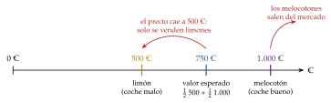
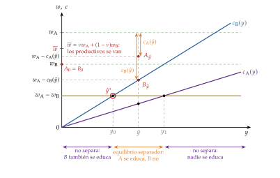
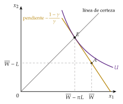
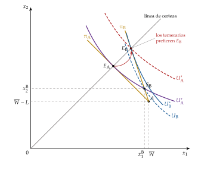
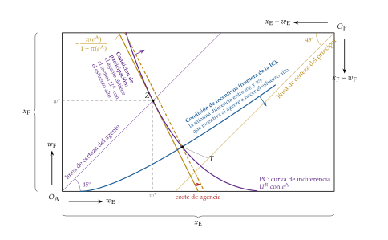
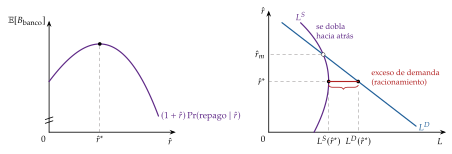
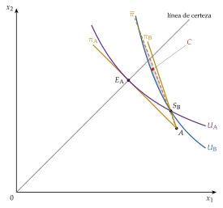

Tema 3.A.13
Economía de la información y teoría de la agencia: selección adversa y riesgo moral.
Akerlof y los limones, señalización de Spence, autoselección de Rothschild-Stiglitz, modelo principal-agente y racionamiento del crédito de Stiglitz-Weiss.
Introducción2′30″
Enganche:
«Dar gato por liebre» y «el ojo del amo engorda al caballo»: 2 refranes que resumen esta exposición. El primero advierte de que quien vende puede saber más que quien compra; el segundo, de que quien trabaja para otro se esfuerza menos si nadie le mira.
Siguen de actualidad. El 12 de marzo de 2023, tras la quiebra de Silicon Valley Bank, el Tesoro, la Reserva Federal y la Corporación Federal de Seguro de Depósitos de Estados Unidos anunciaron que protegerían por completo a todos sus depositantes, también a los que superaban el límite asegurado (Board of Governors of the Federal Reserve System 2023). Evitaron el pánico, pero reabrieron una pregunta clásica: si los depositantes saben que siempre se les rescatará, ¿quién vigilará a los bancos?
Detrás está la pregunta de esta exposición: ¿qué ocurre en un mercado cuando una de las partes sabe algo que la otra no sabe, o hace algo que la otra no ve? ¿Puede un contrato bien diseñado sustituir al «ojo del amo»?
La respuesta de la microeconomía parte del individualismo metodológico:1 explica los fenómenos agregados a partir de las decisiones de individuos que optimizan, consumidores y productores [ver tema 3.A.8].2
Su vara de medir normativa es el primer teorema fundamental de la economía del bienestar (1TFEB): bajo ciertos supuestos, el equilibrio competitivo es eficiente en el sentido de Pareto [ver tema 3.A.22]. Uno de esos supuestos es que todos saben lo relevante para el intercambio.
En esta exposición estudiamos qué ocurre cuando ese supuesto falla porque la información es asimétrica: una parte sabe más que la otra, antes de firmar el contrato (selección adversa) o después (riesgo moral), y qué mecanismos, privados y públicos, permiten mitigar el problema.
Relevancia:
Teórica: la información asimétrica es una de las razones principales por las que falla el 1TFEB y el origen de la teoría de los contratos y del diseño de mecanismos. Lo reconocen 6 premios Nobel:3
en 1996, a Mirrlees y Vickrey, «por sus contribuciones fundamentales a la teoría económica de los incentivos con información asimétrica» (The Nobel Prize 1996);
en 2001, a Akerlof, Spence y Stiglitz, «por sus análisis de los mercados con información asimétrica» (The Nobel Prize 2001);
en 2007, a Hurwicz, Maskin y Myerson, «por haber sentado las bases de la teoría del diseño de mecanismos» (The Nobel Prize 2007);
en 2014, a Tirole, «por su análisis del poder de mercado y la regulación» (The Nobel Prize 2014);
en 2016, a Hart y Holmström, «por sus contribuciones a la teoría de los contratos» (The Nobel Prize 2016), y
en 2020, a Milgrom y Wilson, «por sus mejoras de la teoría de las subastas y sus invenciones de nuevos formatos de subasta» (The Nobel Prize 2020) [ver tema 3.A.14].
Empírica: explica fenómenos que la competencia perfecta no explica, como la retribución variable de directivos y comerciales, las franquicias y los copagos de los seguros, el valor de los títulos educativos o el racionamiento del crédito a las pymes. Y ha generado una literatura que intenta separar en los datos la selección adversa del riesgo moral (Chiappori y Salanié 2000; Einav y Finkelstein 2011).
De política económica: justifica los seguros obligatorios, la información obligatoria al consumidor, la supervisión bancaria [ver tema 3.B.27], la condicionalidad de las prestaciones y de la ayuda financiera internacional y la regulación de los monopolios con información asimétrica [ver tema 3.A.17].
Contextualización:
Desde un punto de vista histórico:
Antes de los años 70, los economistas no habían dado a la información un papel central.4 Laffont y Martimort (2002) señalan que sorprende que Schumpeter (1954) no mencione la palabra «incentivos» en su monumental historia del análisis económico, cuando hoy, para muchos economistas, la economía es en gran medida una cuestión de incentivos: para trabajar duro, producir con calidad, estudiar, invertir o ahorrar. Los manuales del mercado de trabajo, por ejemplo, suponían que el empresario conocía la productividad de cada trabajador (The Economist 2016), y la pregunta central de hoy, cómo diseñar instituciones que den a cada uno los incentivos adecuados, apenas se planteaba.
Cuando George Akerlof escribió a finales de los años 60 The Market for «Lemons», 3 de las revistas más prestigiosas lo rechazaron: la American Economic Review lo juzgó trivial, la Review of Economic Studies tampoco lo aceptó y los evaluadores del Journal of Political Economy adujeron que, si el artículo fuera correcto, la economía sería diferente (Akerlof 2003). Se publicó en 1970 en el Quarterly Journal of Economics (Akerlof 1970), le valió el Nobel de 2001 y abrió una literatura que hoy es una de las más fecundas de la economía: Spence (1973), Rothschild y Stiglitz (1976), la teoría de la agencia (Ross 1973; Holmström 1979) y, desde los años 80, la teoría de los contratos y del diseño de mecanismos.
Desde un punto de vista teórico, el punto de partida es el 1TFEB. Uno de sus supuestos, a menudo implícito, es que todos observan lo que afecta a sus decisiones: la información perfecta y simétrica, el supuesto 2 de la lista común de las estructuras de mercado [ver tema 3.A.16]. La economía de la información estudia qué pasa cuando se levanta, y conviene distinguir 3 situaciones:
Información imperfecta es el término general: alguien no conoce algo relevante. No basta para que la asignación sea ineficiente.
Con información incompleta pero simétrica, nadie sabe qué estado de la naturaleza ocurrirá, pero todos saben lo mismo.5 La asignación puede seguir siendo eficiente si hay un mercado para cada bien en cada estado de la naturaleza (mercados contingentes completos): es el modelo de Arrow y Debreu (Arrow 1953; Debreu 1959, cap. 7) [ver tema 3.A.21], y la base de los seguros [ver tema 3.A.10].
Con información asimétrica, una parte sabe algo relevante que la otra no sabe. Si además hay conflicto de intereses, la parte informada no tiene interés en revelar lo que sabe: ningún mercado contingente puede cubrir un riesgo cuya existencia o cuya probabilidad depende de lo que solo una parte sabe o hace, algunos mercados no pueden abrirse (Arrow 1963) y el 1TFEB deja de cumplirse. Sin conflicto de intereses, la parte informada revelaría lo que sabe y la asimetría sería inocua.6
La asimetría puede ser de 2 tipos, según el momento y lo que se oculta (tabla 1): información oculta antes de firmar el contrato, que da lugar a la selección adversa, y acción oculta después de firmarlo, que da lugar al riesgo moral.
La teoría de la agencia (Ross 1973; Jensen y Meckling 1976) da el marco común a los 2. En una relación de agencia, una parte, el principal, delega en otra, el agente, que sabe o hace algo que el principal no ve. El principal diseña el contrato sujeto a 2 tipos de restricciones: la de participación (PC: el agente acepta si obtiene al menos su utilidad de reserva) y la de compatibilidad de incentivos (IC: al agente le conviene revelar su tipo o hacer el esfuerzo que se le pide). Con información oculta es un problema de selección adversa; con acción oculta, de riesgo moral (Laffont y Martimort 2002).
| Información simétrica | Información oculta (antes del contrato) |
Acción oculta (después del contrato) |
|
|---|---|---|---|
| Problema | ninguno: first best |
selección adversa | riesgo moral |
| Quién mueve primero | — | el no informado ofrece un menú (screening, I.3.2) o el informado envía una señal (signalling, I.3.1) | el principal ofrece un pago que depende del resultado (II.2) |
| Restricciones | participación (PC) | \(\mathrm{PC}_i\) e \(\mathrm{IC}_i\) de cada tipo | PC e IC del esfuerzo |
| Ejemplos | seguro con riesgo conocido | coches usados, seguros, empleo, crédito | empleo, seguros, gestión de empresas, crédito |
Fuente: elaboración propia a partir de Macho-Stadler y Pérez-Castrillo (2001, cap. 1) y Mas-Colell, Whinston y Green (1995, caps. 13 y 14).
Los supuestos del 1TFEB y la información. El teorema necesita: mercados completos, un precio para cada bien, sin externalidades ni bienes públicos; precios comunes, todos se enfrentan a los mismos precios, sin impuestos distorsionantes; precio-aceptación, nadie tiene poder de mercado, y preferencias localmente no saciables (Mas-Colell, Whinston y Green 1995, prop. 16.C.1). La convexidad de preferencias y tecnologías no hace falta para el 1TFEB: la necesitan la existencia del equilibrio y el segundo teorema [ver tema 3.A.21] [ver tema 3.A.22]. Hay además un supuesto implícito: que los agentes observan todo lo que entra en el intercambio (la calidad del bien, el riesgo del cliente, el esfuerzo pactado). Por eso la información asimétrica es, en el fondo, un caso de mercados incompletos.
Problemática (preguntas clave):
¿Por qué la información asimétrica impide que el mercado asigne los recursos de forma eficiente?
¿Qué mecanismos (señales, menús de contratos, pagos por resultados) permiten sortearla, y quién paga su coste?
¿Qué puede hacer el sector público, y qué no?
Estructura: la exposición se divide en 3 bloques, los 2 primeros con los mismos 3 pasos: qué es el problema, por qué la asignación competitiva se aparta de la óptima y qué soluciones hay.
I. Selección adversa: su definición (I.1), el mercado de «limones» de Akerlof (I.2) y sus soluciones (I.3): la señalización de la parte informada (Spence), la autoselección que diseña la no informada (Rothschild y Stiglitz) y otras, privadas y públicas.
II. Problema de agencia y riesgo moral: su definición (II.1), el modelo principal-agente con esfuerzo observable e inobservable (II.2) y sus soluciones (II.3).
III. Selección adversa y riesgo moral a la vez: el racionamiento del crédito de Stiglitz y Weiss (III.2), que reúne los 2 problemas en un mismo mercado.
Un mismo hilo recorre los 3 bloques: quien no tiene la información diseña un contrato que cumpla la participación y la compatibilidad de incentivos, y la diferencia con el óptimo de información perfecta es el precio de la información, que alguien paga: los buenos que se señalizan o aceptan un seguro parcial, el principal que tiene que pagar por el riesgo que carga al agente y el prestatario que se queda sin crédito.
3.A.13. Economía de la información y teoría de la agencia
Introducción: información oculta (ex ante) / acción oculta (ex post); \(\mathrm{PC}\) e \(\mathrm{IC}\)
I. Selección adversa
1. Definición: información oculta + heterogeneidad + conflicto
2. Asignación: limones (Akerlof, 1970)
3. Soluciones: señalización (Spence, 1973); autoselección (Rothschild-Stiglitz, 1976); otras
II. Problema de agencia y riesgo moral
1. Definición: acción oculta + conflicto + riesgo y aversión
2. Asignación: principal-agente, \(\mathrm{PC}+\mathrm{IC}\) \(\Rightarrow\) coste de agencia
3. Soluciones: de la teoría de la agencia; otras
III. Selección adversa y riesgo moral a la vez
1. Idea: no son excluyentes
2. Racionamiento del crédito (Stiglitz-Weiss, 1981)
Conclusión
La exposición va de la información oculta antes del contrato (I) a la acción oculta después del contrato (II) y a los 2 problemas juntos en el mercado de crédito (III). Reparto del cante: introducción, 2′30″; I, 11′ (I.1, 1′; I.2, 2′30″; I.3, 7′30″: señalización, 3′; autoselección, 4′; otras soluciones, 0′30″); II, 11′ (II.1, 1′30″; II.2, 7′30″; II.3, 2′); III, 4′30″ (III.1, 0′30″; III.2, 4′), y conclusión, 1′. La tabla de clasificación sirve de apoyo y no se escribe. Los gráficos imprescindibles son la señalización de Spence, el seguro de Rothschild y Stiglitz por capas, la caja del principal-agente y los 2 paneles de Stiglitz y Weiss. El programa del principal (5) se escribe en II.2 y se queda en una esquina de la pizarra hasta el final. Conviene escribir este esquema en la pizarra al empezar.
I. Selección adversa11′
En el cante: la definición y la terna de condiciones, con las aplicaciones en una frase (1′); Akerlof con los números del ejemplo y su conclusión de eficiencia (2′30″); la señalización con su gráfico y la doble desigualdad (3′); la autoselección con el resumen del seguro con información simétrica en 2 frases y el gráfico por capas (agrupador que no se sostiene y separador), la discriminación de segundo grado y la inexistencia en una frase cada una (4′), y las otras soluciones en una lista corta (0′30″). Los juegos bayesianos, la versión continua de Akerlof, los equilibrios de Wilson y Riley y la evidencia en detalle son de profundización.
Empezamos por la asimetría que surge antes del contrato. La conclusión anticipada del bloque es que, cuando la calidad es privada, el precio deja de ser una buena señal y el mercado selecciona a los peores; las soluciones (señalizar o filtrar) existen, pero cuestan, y por eso el resultado queda por debajo del óptimo de información perfecta.
I.1. Definición
La selección adversa es un problema de información asimétrica que surge antes de la firma del contrato y se debe a información oculta de una de las partes en presencia de un conflicto de intereses.
Para que haya selección adversa deben darse 3 condiciones:
Información oculta: una característica de una de las partes que la otra no observa (la calidad del coche, la productividad del trabajador, el riesgo del asegurado).
Heterogeneidad: si todos fueran iguales, no habría nada que distinguir, y un trato uniforme no tendría coste de eficiencia.
Conflicto de intereses: la parte informada no tiene interés en revelarlo; si lo tuviera, lo diría y la asimetría desaparecería.
La selección adversa se analiza con los juegos bayesianos (Harsanyi 1967–1968): cada agente conoce su tipo y todos conocen la distribución de los tipos, que es conocimiento común.7 El concepto de solución es el equilibrio bayesiano de Nash o, si el juego tiene varias etapas, el equilibrio bayesiano perfecto [ver tema 3.A.14].
El supuesto de conocimiento común es exigente, y los resultados dependen mucho de los detalles del juego: es la crítica que se conoce como doctrina de Wilson (R. Wilson 1987). Por eso, a diferencia del riesgo moral, que tiene un modelo canónico (el principal-agente), la selección adversa se ha estudiado con modelos distintos según el mercado.
Aplicaciones. Aparece en muchos mercados:
Bienes de segunda mano: el comprador no conoce la calidad (Akerlof 1970).
Mercado de trabajo: la empresa no conoce la productividad del trabajador (Spence 1973).
Seguros: la aseguradora no conoce el riesgo de cada cliente (Rothschild y Stiglitz 1976; C. Wilson 1977).
Dinero: la moneda de peor ley expulsa a la buena de la circulación (ley de Gresham).
Finanzas de la empresa: los dividendos pueden ser una señal de solvencia (Bhattacharya 1979), y la emisión de acciones, una mala señal que lleva a preferir la autofinanciación y la deuda (teoría del orden jerárquico, Myers y Majluf (1984)) [ver tema 3.B.3].
Organización industrial: el entrante potencial no conoce los costes del instalado, que puede fijar un precio bajo para señalizar que sus costes son bajos y disuadir la entrada (P. Milgrom y Roberts 1982) [ver tema 3.A.15].
Teoría de la regulación: el regulador no conoce los costes de la empresa regulada, que tiene incentivos a declararlos más altos y a esforzarse poco en reducirlos; el regulador ofrece un menú de contratos que equilibra eficiencia y renta informativa (Laffont y Tirole 1993) [ver tema 3.A.17].
Crédito: el banco no conoce el riesgo del prestatario (Stiglitz y Weiss 1981) (bloque III).
I.2. Diferencia entre la asignación competitiva y la asignación óptima: The Market for «Lemons» (Akerlof, 1970)
Una vez definido el problema, vemos con el ejemplo más famoso cómo aleja la asignación competitiva de la óptima.
a) Idea
Akerlof (1970) se pregunta por qué un coche casi nuevo pierde tanto valor al salir del concesionario. Su respuesta es que el comprador de un coche usado no sabe si es bueno (un «melocotón», peach) o malo (un «limón», lemon, en la jerga estadounidense), y sospecha de que quien lo vende sabe algo que él no sabe. Es la pregunta de esta exposición en su forma más simple: ¿puede desaparecer un mercado porque el comprador no ve la calidad?
b) Modelo
i) Supuestos
Hay coches usados de 2 calidades, la mitad buenos y la mitad malos. Los compradores valoran los buenos en 1.000 € y los malos en 500 €; los vendedores los valoran algo menos, de modo que estarían dispuestos a venderlos por esas cantidades.
El vendedor conoce la calidad de su coche; el comprador no, hasta que lo compra y lo usa. Los compradores son neutrales al riesgo y conocen la proporción de cada calidad.
ii) Desarrollo
Con información simétrica, si los compradores pudieran distinguir los melocotones de los limones, habría un mercado para cada calidad, a 1.000 € y a 500 €, y se harían todos los intercambios.
Con información asimétrica (gráfico 1):
Si los compradores creen que cada coche es bueno o malo con la misma probabilidad, estarán dispuestos a pagar su valor esperado: 750 €.
Pero a 750 € solo venden los dueños de limones; los de melocotones, que valoran su coche en casi 1.000 €, se lo quedan.
Sabiéndolo, los compradores racionales solo pagan 500 €, porque recibirán un limón: en equilibrio solo se venden limones.
Los vendedores de limones reciben lo mismo que con información simétrica, pero los melocotones son expulsados del mercado y se quedan en el garaje: es la selección adversa, porque el precio selecciona a los peores. Y es una pérdida, porque hay compradores dispuestos a pagar por un melocotón más de lo que lo valora su dueño.8

Fuente: elaboración propia a partir de Akerlof (1970).
iii) Implicaciones
Siguiendo la lógica del modelo, la información asimétrica puede:
acabar con el mercado, si la calidad se reparte en un continuo y el desenredo llega hasta el final;
reducir el número de transacciones que serían mutuamente beneficiosas, como en el ejemplo, y
dar lugar a equilibrios múltiples, porque el precio ejerce 2 efectos contrapuestos sobre la demanda: el efecto sustitución de siempre y un efecto calidad, porque un precio más alto atrae coches mejores.9
En todos los casos, la selección adversa impide que se alcance un óptimo de Pareto.10
c) Extensiones
Un continuo de calidades. La calidad \(s\) de cada coche se distribuye de forma uniforme en \([\underline{s},\overline{s}]\); el vendedor conoce la de su coche y la valora en \(s\); los compradores, neutrales al riesgo, valoran un coche de calidad \(s\) en \(\alpha s\), con \(\alpha>1\), de modo que todos los intercambios serían eficientes. Los compradores solo conocen la distribución.
Al precio \(p\) solo venden los que tienen \(s\leq p\), y la calidad media de lo que se ofrece es \(\mathbb{E}[s\mid s\leq p]=(\underline{s}+p)/2\).
Los compradores pagan, como mucho, lo que vale para ellos esa calidad media, \(p=\alpha\,(\underline{s}+p)/2\), de donde \[p^*=\frac{\alpha\,\underline{s}}{2-\alpha}\qquad(\text{si }\alpha<2\text{ y }p^*<\overline{s}). \tag{1}\]
Solo se venden los coches con \(s\leq p^*\); los mejores se quedan en el garaje. Si \(\underline{s}=0\), como en el ejemplo de Akerlof (1970), \(p^*=0\): el mercado desaparece, aunque cada coche valga más para cualquier comprador que para su dueño.
Ejemplo: con \(s\in[1,2]\) y \(\alpha=1{,}2\), \(p^*=1{,}2/0{,}8=1{,}5\) y se vende la mitad de los coches.
d) Evidencia empírica
La evidencia es más clara en los seguros de salud. Cuando la Universidad de Harvard pasó a pagar a sus empleados una cantidad fija, fuera cual fuera el plan elegido, los más sanos abandonaron el plan más generoso: hubo selección adversa, con una pérdida de bienestar del 2-4 % del gasto inicial, aunque la competencia redujo las primas un 5-8 % (Cutler y Reber 1998). Einav y Finkelstein (2011) muestran cómo medir esa pérdida con las curvas de demanda y de coste medio.
En otros mercados es más débil o depende del contrato: en las camionetas usadas de Estados Unidos, Bond (1982) no encuentra más averías en las que cambiaron de dueño, y en las subastas mayoristas de coches Genesove (1993) encuentra una selección adversa pequeña.
e) Valoración
El modelo explica por qué un mercado puede no existir aunque todos los intercambios sean eficientes, pero supone que nadie hace nada para resolver el problema. En la realidad, los vendedores de buenos coches dan garantías, se crean marcas y reputaciones, y los compradores pagan inspecciones. Si el problema es que no se distingue, ¿quién puede hacer que se distinga? Es la pregunta de las soluciones.
I.3. Soluciones
Una vez establecido que la selección adversa aleja la asignación del óptimo, pasamos a sus soluciones. Las ordenamos según quién mueve ficha: la parte informada, que envía una señal (I.3.1); la no informada, que diseña un menú de contratos (I.3.2), y otras soluciones, privadas y públicas (I.3.3).
I.3.1. Señalización: solución de la parte informada (Spence, 1973)
a) Idea
La señalización (signalling), propuesta formalmente por Spence (1973) en Job Market Signaling, es la transmisión creíble de información privada desde la parte informada a la no informada, con una acción que cuesta relativamente más a quien tiene la calidad baja.
Es precisamente ese mayor coste para los poco productivos lo que hace creíble la señal.
Si enviar la señal no costara nada, todos dirían que su calidad es alta, y la parte no informada, racionalmente, no daría ningún valor a esa señal.
b) Modelo
i) Supuestos
Hay 2 tipos de trabajadores, de productividad alta (\(\mathrm{A}\)) y baja (\(\mathrm{B}\)), en proporciones \(\nu\) y \(1-\nu\). La empresa no observa la productividad hasta después de contratar.
Las empresas compiten y tienen beneficio nulo: pagan a cada trabajador su productividad esperada. Si supieran quién es quién, pagarían \(w_{\mathrm{A}}\) y \(w_{\mathrm{B}}\), con \(w_{\mathrm{A}}>w_{\mathrm{B}}\); si no, el salario común sería \(\overline{w}=\nu\,w_{\mathrm{A}}+(1-\nu)\,w_{\mathrm{B}}\), que expulsa a los productivos si lo que obtendrían fuera supera \(\overline{w}\): el problema de Akerlof en el mercado de trabajo.
La educación \(y\geq 0\) es observable y no aumenta la productividad: solo sirve como señal.
Su coste (de matrícula, de oportunidad, de esfuerzo) crece con \(y\) y es mayor para los poco productivos: \(c_{\mathrm{B}}(y)>c_{\mathrm{A}}(y)\) y \(c_{\mathrm{B}}'(y)>c_{\mathrm{A}}'(y)\) (condición de cruce único, single crossing).
ii) Desarrollo
Las empresas creen que quien tiene al menos \(\hat y\) es de tipo \(\mathrm{A}\), y pagan \(w_{\mathrm{A}}\) si \(y\geq\hat y\) y \(w_{\mathrm{B}}\) si \(y<\hat y\). Cada trabajador elige entonces \(y=\hat y\) o \(y=0\). Para que esas creencias se confirmen (equilibrio separador) deben cumplirse 2 restricciones de compatibilidad de incentivos, \[\begin{aligned} w_{\mathrm{A}}-c_{\mathrm{A}}(\hat y)&\geq w_{\mathrm{B}} && (\mathrm{IC}_{\mathrm{A}}\text{: al tipo A le compensa educarse})\\ w_{\mathrm{B}}&\geq w_{\mathrm{A}}-c_{\mathrm{B}}(\hat y) && (\mathrm{IC}_{\mathrm{B}}\text{: al tipo B no le compensa imitarle}) \end{aligned}\] y las de participación de cada tipo (que lo que obtiene en el mercado supere lo que obtendría fuera). Las 2 de incentivos juntas dan \[c_{\mathrm{A}}(\hat y)\leq w_{\mathrm{A}}-w_{\mathrm{B}}\leq c_{\mathrm{B}}(\hat y). \tag{2}\]
Interpretación: la señal es creíble porque cuesta, y cuesta más al que no tiene la cualidad: la diferencia salarial compensa al productivo, pero no al poco productivo.
Interpretación gráfica (gráfico 2): la diferencia salarial \(w_{\mathrm{A}}-w_{\mathrm{B}}\) es una recta horizontal y los costes de cada tipo, 2 curvas crecientes, más inclinada la del tipo \(\mathrm{B}\). Separan los niveles de educación en los que la recta queda entre las 2 curvas: \(c_{\mathrm{B}}^{-1}(w_{\mathrm{A}}-w_{\mathrm{B}})\leq\hat y\leq c_{\mathrm{A}}^{-1}(w_{\mathrm{A}}-w_{\mathrm{B}})\).

Fuente: elaboración propia a partir de Spence (1973).
Los equilibrios. Un equilibrio son unas creencias de las empresas, unos salarios y unas decisiones de educación tales que cada trabajador elige lo mejor para él, las empresas tienen beneficio nulo y las creencias se confirman. Hay 2 clases:
Hay, por tanto, infinitos equilibrios. Cho y Kreps (1987) proponen el criterio intuitivo: las empresas no deben creer que un trabajador de tipo \(\mathrm{B}\) elegiría una educación que no le compensaría ni siquiera si le tomaran por \(\mathrm{A}\). Con él solo sobrevive el separador más barato, \(\hat y^*\) tal que \(c_{\mathrm{B}}(\hat y^*)=w_{\mathrm{A}}-w_{\mathrm{B}}\) (Mas-Colell, Whinston y Green 1995, cap. 13) [ver tema 3.A.14].
Conviene subrayar que la empresa no fija el nivel \(\hat y\): lo fijan sus creencias, y lo que caracteriza un equilibrio es que esas creencias se cumplen. Por eso hay tantos equilibrios separadores, y el criterio intuitivo elige entre ellos.
Como la educación cuesta y no produce nada, el equilibrio separador es peor que el first best de información perfecta, y no se cumple el 1TFEB. Ni siquiera es siempre el mejor resultado posible con esa información: si hay muchos productivos, un agrupador puede dejar mejor a todos, porque nadie paga la señal. El listón con el que se comparan estos equilibrios es el óptimo restringido (second best en la teoría de los contratos): el mejor resultado que podría alcanzar quien diseñara los contratos sujeto a las mismas restricciones de información. No es el segundo óptimo de Lipsey y Lancaster, aunque comparte la idea de un óptimo con una restricción añadida [ver tema 3.A.22].
iii) Implicaciones
Educación y salario se correlacionan aunque la educación no aumente la productividad. Es la diferencia con la teoría del capital humano de Becker, en la que la educación eleva la productividad y por eso el salario [ver tema 3.A.25]: los datos de salarios por años de estudio no permiten distinguir las 2 explicaciones.12
Sobreeducación: en el equilibrio separador, los productivos invierten en educación más de lo socialmente útil, solo para distinguirse. Es un despilfarro social, porque en el modelo la educación no produce nada.13
c) Evidencia empírica
El efecto diploma (sheepskin effect): el salario salta al obtener el título, más que con cada año de estudio (Hungerford y Solon 1987). Con un experimento natural, Tyler, Murnane y Willett (2000) encuentran que aprobar el GED, un título de secundaria para adultos de Estados Unidos, eleva los ingresos de los jóvenes blancos sin estudios entre un 10 y un 19 %, sin cambiar sus conocimientos, lo que apunta a un valor de señal.
d) Valoración
Muestra que la parte informada puede resolver el problema, pero con un coste que paga ella. La alternativa es que lo resuelva la parte no informada, diseñando ella el contrato: es la autoselección.
I.3.2. Autoselección: solución de la parte no informada (Rothschild y Stiglitz, 1976)
a) Idea
En la autoselección (screening) es la parte no informada la que mueve ficha: diseña un menú de contratos, uno para cada tipo, de forma que a cada tipo le convenga elegir el suyo y, al elegirlo, revele quién es.
Su lógica es la del principio de revelación: quien diseña el contrato puede limitarse, sin perder nada, a menús en los que a cada uno le conviene elegir la opción pensada para su tipo (Gibbard 1973; Dasgupta, Hammond y Maskin 1979; Myerson 1979). Por eso basta buscar menús con un contrato por tipo que cumplan las restricciones de participación (\(\mathrm{PC}_i\)) y de compatibilidad de incentivos (\(\mathrm{IC}_i\)).14
Lo ilustramos con el mercado de seguros de Rothschild y Stiglitz (1976), que muestran cómo pueden las aseguradoras filtrar a sus clientes.
b) Modelo
i) Supuestos
Cada individuo tiene una riqueza \(\overline{W}\) y con probabilidad \(\pi_i\) sufre un accidente que le hace perder \(L\). Hay 2 tipos: prudentes, de riesgo bajo \(\pi_{\mathrm{B}}\), en proporción \(\nu\), y temerarios, de riesgo alto \(\pi_{\mathrm{A}}>\pi_{\mathrm{B}}\), en proporción \(1-\nu\). Tienen la misma utilidad de Bernoulli \(u(\cdot)\), con \(u''<0\).
Cada individuo conoce su riesgo; las aseguradoras solo conocen \(\pi_{\mathrm{A}}\), \(\pi_{\mathrm{B}}\) y \(\nu\).
Las aseguradoras son neutrales al riesgo, compiten ofreciendo contratos (prima e indemnización) y entran libremente: en equilibrio, cada contrato tiene beneficio esperado nulo. Cada individuo compra un solo contrato (exclusividad).
El seguro con información simétrica (Mas-Colell, Whinston y Green 1995, cap. 6) [ver tema 3.A.10]. El individuo parte de la lotería \((\overline{W},\,\overline{W}-L;\ 1-\pi,\,\pi)\): punto \(A=(\overline{W},\overline{W}-L)\) del gráfico 3, con la riqueza sin accidente, \(x_1\), en el eje horizontal y con accidente, \(x_2\), en el vertical; la bisectriz es la línea de certeza. Si compra una cobertura \(S\) a una prima \(\gamma\) por euro asegurado, \[\left.\begin{aligned} x_1&=\overline{W}-\gamma S\\ x_2&=\overline{W}-L+(1-\gamma)\,S\end{aligned}\right\}\ \Longrightarrow\ x_2=\frac{\overline{W}}{\gamma}-L-\frac{1-\gamma}{\gamma}\,x_1, \tag{3}\] la recta de aseguramiento, de pendiente \(-(1-\gamma)/\gamma\): cada euro de más con accidente cuesta \(\gamma/(1-\gamma)\) euros sin accidente (es el equivalente de la recta de balance del consumidor con certidumbre [ver tema 3.A.8]). Con competencia, el beneficio esperado de la aseguradora es nulo, \((1-\pi)\,\gamma S+\pi\,(\gamma S-S)=(\gamma-\pi)\,S=0\), así que \(\gamma=\pi\): la prima es actuarialmente justa y la recta de aseguramiento coincide con la recta de isobeneficio nulo de la aseguradora. La pendiente de la curva de indiferencia, en valor absoluto, es la relación marginal de sustitución estocástica, o entre estados, \(\mathrm{RMSE}=(1-\pi)\,u'(x_1)/[\pi\,u'(x_2)]\), que en la línea de certeza vale \((1-\pi)/\pi\). Con prima justa, la tangencia se da en la línea de certeza: el individuo averso se asegura por completo (punto \(E\)), como establece el teorema de Mossin; con una prima recargada, \(\gamma>\pi\), se asegura solo en parte [ver tema 3.A.10].

Fuente: elaboración propia a partir de Mas-Colell, Whinston y Green (1995, cap. 6).
Es el modelo de seguros de la elección con riesgo [ver tema 3.A.10], con los 2 lados del mercado y 2 tipos de asegurado. En el cante basta con 2 frases: con prima justa, el averso se asegura por completo en la línea de certeza.
ii) Desarrollo
Con 2 tipos hay 2 rectas de isobeneficio nulo, \((1-\pi_i)\,x_1+\pi_i\,x_2=\overline{W}-\pi_iL\), que salen de \(A\) con pendiente \(-(1-\pi_i)/\pi_i\): la de los prudentes es más inclinada. Si se agrupa a todos al riesgo medio, \(\overline{\pi}=\nu\,\pi_{\mathrm{B}}+(1-\nu)\,\pi_{\mathrm{A}}\), la recta queda entre las 2.
Cruce único. Por cada punto pasan 2 curvas de indiferencia, y la del prudente es más inclinada, porque su RMSE es mayor (\(\pi_{\mathrm{B}}<\pi_{\mathrm{A}}\)): las 2 curvas se cortan una sola vez. Es lo que permite separarlos: a igualdad de precio, el temerario quiere más cobertura.15
Si la aseguradora pudiera distinguirlos (first best), ofrecería a cada tipo un seguro completo a su prima justa: \(E_{\mathrm{B}}\) y \(E_{\mathrm{A}}\) en la línea de certeza (gráfico 4, capa inicial). Pero no puede: si ofreciera ambos, los temerarios elegirían \(E_{\mathrm{B}}\), más barato, y la aseguradora tendría pérdidas.
No hay equilibrio agrupador (panel izquierdo). En cualquier contrato común \(M\) sobre la recta del riesgo medio, la curva del prudente es más inclinada que la del temerario. Siempre hay contratos con algo menos de cobertura y una prima algo menor (zona rayada) que prefieren los prudentes pero no los temerarios y que, como solo atraen a prudentes, dan beneficio. Una aseguradora que entre ofreciendo uno de ellos, como \(N\), se lleva a la «buena clientela» (cream skimming), y \(M\), que cubría costes con la siniestralidad media, deja de cubrirlos con la de los temerarios: desaparece. Es la selección adversa en acción.
El equilibrio, si existe, es separador (panel derecho):
los temerarios reciben un seguro completo a su prima justa, \(E_{\mathrm{A}}\): \(x_1^{\mathrm{A}}=x_2^{\mathrm{A}}=\overline{W}-\pi_{\mathrm{A}}L\);
los prudentes reciben, sobre su recta de isobeneficio nulo, el contrato con más cobertura que no atrae a los temerarios, \(S_{\mathrm{B}}\), que deja a estos indiferentes: \[\begin{aligned} u(\overline{W}-\pi_{\mathrm{A}}L)&=(1-\pi_{\mathrm{A}})\,u(x_1^{\mathrm{B}})+\pi_{\mathrm{A}}\,u(x_2^{\mathrm{B}}) &&(\mathrm{IC}_{\mathrm{A}}\text{ saturada})\\ (1-\pi_{\mathrm{B}})\,x_1^{\mathrm{B}}+\pi_{\mathrm{B}}\,x_2^{\mathrm{B}}&=\overline{W}-\pi_{\mathrm{B}}L &&(\text{beneficio nulo con los prudentes}) \end{aligned}\tag{4}\] con \(x_1^{\mathrm{B}}>x_2^{\mathrm{B}}\): un seguro parcial, con franquicia.
En la práctica es el menú de un contrato a todo riesgo caro, que eligen los temerarios, y uno con franquicia barato, que eligen los prudentes: si hay accidente, con el segundo se habrían arrepentido de no haber contratado el primero, y eso es lo que lo hace poco atractivo para los temerarios.

Fuente: elaboración propia a partir de Rothschild y Stiglitz (1976) y Mas-Colell, Whinston y Green (1995, cap. 13).
iii) Implicaciones
No hay distorsión arriba: el tipo al que los demás no querrían imitar pero que querría imitar a los demás, el temerario, recibe el contrato eficiente, el seguro completo. La distorsión recae en el otro tipo: el prudente solo consigue un seguro parcial.
El coste de la separación lo pagan, por tanto, los buenos conductores: para que su contrato no atraiga a los de alto riesgo, aceptan soportar parte del riesgo, igual que en la señalización los trabajadores productivos pagan el coste de su educación.16 El resultado se aparta del first best y no se cumple el 1TFEB; ni siquiera es siempre un óptimo restringido, porque un menú con subvenciones cruzadas entre los tipos puede mejorarlo (anexo B).
El equilibrio puede no existir. Si hay muchos prudentes (\(\nu\) grande), la recta del riesgo medio pasa por encima de la curva de indiferencia del prudente en \(S_{\mathrm{B}}\). Entonces un contrato agrupador lo prefieren los 2 tipos y da beneficio, y rompe el separador; pero, como acabamos de ver, ningún agrupador es un equilibrio. No hay equilibrio en estrategias puras (anexo B).
c) Extensiones
Otros conceptos de equilibrio. Las respuestas a la inexistencia cambian lo que se supone que anticipan las aseguradoras: en el equilibrio de anticipación de C. Wilson (1977), una aseguradora no ofrece un contrato si prevé que, al retirar las demás los suyos, tendría pérdidas, y entonces el agrupador puede sostenerse; en el equilibrio reactivo de Riley (1979), prevé que los demás responderán con nuevos contratos, y se sostiene el separador (anexo B).
La discriminación de precios de segundo grado es la misma lógica con un monopolista [ver tema 3.A.17]: no sabe quién valora más el bien y ofrece un menú de paquetes o de calidades que cumple las restricciones de participación (\(\mathrm{PC}_i\)) y de compatibilidad de incentivos (\(\mathrm{IC}_i\)) de cada tipo (allí, \(t_1<t_2\)). El tipo alto compra la cantidad eficiente y se queda una renta informativa («no hay distorsión arriba»), y al tipo bajo se le ofrece menos de lo eficiente («distorsión abajo») (Mussa y Rosen 1978; Maskin y Riley 1984). Aquí ocurre lo mismo con el seguro: el tipo que querría imitar al otro, el de alto riesgo, no se distorsiona, y el de bajo riesgo carga con la distorsión. La diferencia es que, con competencia, nadie se queda una renta informativa: las aseguradoras tienen beneficio nulo y los temerarios obtienen lo mismo que con información completa.
d) Evidencia empírica
La predicción contrastable es una correlación positiva entre cobertura y siniestralidad. En el seguro de automóvil de los conductores noveles franceses, Chiappori y Salanié (2000) no la encuentran; en las rentas vitalicias británicas, la mortalidad sí se relaciona con las cláusulas del contrato (Finkelstein y Poterba 2004).
La correlación puede deberse tanto a selección adversa como a riesgo moral (quien está más asegurado se cuida menos), y distinguirlos es el gran problema empírico del campo (Einav y Finkelstein 2011).
e) Valoración
Explica las franquicias y los menús de pólizas, pero su equilibrio es frágil (puede no existir) y supone que las aseguradoras solo compiten en contratos y que cada cliente compra uno. Cuando el mercado no consigue separar, o separa a costa de dejar a los prudentes mal asegurados, hay espacio para otras soluciones, y entre ellas la intervención pública.
I.3.3. Otras soluciones: privadas y públicas
Las soluciones al problema pueden venir del sector privado y del sector público:
Privadas: las garantías, que no le salen a cuenta a quien vende un limón;17 la reputación y las marcas en juegos repetidos, porque el comprador puede castigar en el futuro al vendedor que le defraude; la certificación por terceros (inspecciones, auditorías, agencias de calificación), y los historiales de crédito o de siniestros (sistemas bonus-malus).
Públicas:
información obligatoria y garantías legales: en España, el vendedor profesional responde de la falta de conformidad del bien durante 3 años y, en los de segunda mano, puede pactarse un plazo menor que no baje de 1 año (Jefatura del Estado 2021);
seguro obligatorio, que impide que los de riesgo bajo salgan del mercado, como el de responsabilidad civil del automóvil (Jefatura del Estado 2004);
provisión o aseguramiento público de quienes el mercado excluye o encarece mucho, como los seguros de salud de las personas mayores, que las aseguradoras privadas solo podrían cubrir subiendo las cuotas de todos y expulsando a los menos propensos a enfermar;
límites a la discriminación por características: desde el 21 de diciembre de 2012, las aseguradoras de la Unión Europea no pueden cobrar primas distintas por sexo (Tribunal de Justicia de la Unión Europea 2011). Es un objetivo de equidad que puede agravar la selección adversa, porque impide usar información relevante.
La información asimétrica es, así, un fallo de mercado que puede justificar la intervención [ver tema 3.A.23], porque explica por qué faltan mercados (Arrow 1963) [ver tema 3.A.21]; pero el regulador tampoco conoce el tipo de cada uno, y sus soluciones (obligar a todos a estar en el mercado, obligar a informar) también tienen costes.
Recapitulando: cuando la información se oculta antes de firmar, el mercado se desenreda por abajo y solo se reabre si alguien paga por distinguirse, ya sea con una señal costosa o aceptando un contrato peor. Una vez estudiado lo que ocurre antes del contrato, pasamos al problema que surge después de firmarlo, cuando lo que se oculta es una acción.
II. Problema de agencia y riesgo moral11′
En el cante: la definición, las 3 condiciones y el dilema entre incentivos y reparto del riesgo (1′30″). En el modelo principal-agente, los supuestos (1′); el programa del principal (5) a la izquierda de la pizarra y la caja a la derecha; el caso 2, con el pago fijo en \(Z\) (2′); los casos 1 y 3 de palabra (1′); el caso 4, añadiendo la restricción de incentivos al programa y a la caja, con \(w_{\mathrm{E}}>w_{\mathrm{F}}\), el cociente de verosimilitud, el punto \(T\) y el coste de agencia (3′), y la tabla de los 4 casos como apoyo (0′30″). Las soluciones, en una lista corta (2′). El programa se queda en una esquina de la pizarra hasta el final. La resolución completa de las condiciones de primer orden, la regla de Borch con un principal averso, el esfuerzo continuo y el contrato lineal están en el anexo A.
Una vez estudiada la información oculta, pasamos a la asimetría que surge después del contrato. «El ojo del amo engorda al caballo», decía el refrán del enganche; cuando el amo no puede mirar, tiene que pagar de otra manera. La conclusión anticipada del bloque es que, cuando el esfuerzo no se ve, dar incentivos obliga a cargar riesgo sobre quien no quiere soportarlo, y ese coste hace que el contrato óptimo sea un óptimo restringido.
II.1. Definición
El riesgo moral es un problema de información asimétrica que surge después de firmar el contrato y se debe a una acción oculta (no observable o no verificable) de una de las partes en presencia de un conflicto de intereses. Se formaliza con la relación de agencia: un principal delega una tarea en un agente cuya actuación no puede controlar por completo, y el agente realiza la tarea a cambio de una remuneración.18
Es un problema antiguo. Adam Smith (1776) ya advierte que los directores de las sociedades por acciones, que gestionan el dinero de otros más que el suyo, no lo vigilan con el mismo celo que los socios de una compañía privada, de modo que en ellas «la negligencia y la prodigalidad siempre prevalecerán, en mayor o menor medida» (libro V, cap. I, parte III).
El término viene de los seguros y lo introducen en la economía Arrow (1963) y Pauly (1968), que muestran que el asegurado demanda más asistencia médica porque no paga su coste marginal. Las bases del análisis las ponen Ross (1973), que acuña la expresión problema del principal, Mirrlees (1974) y Stiglitz (1974); Holmström (1979) y Grossman y Hart (1983) dan la formulación con la que hoy se resuelve.
Para que haya un problema de riesgo moral deben darse 3 condiciones:
Acción oculta: el resultado que obtiene el principal depende de una acción del agente (el esfuerzo) que se realiza después de firmar y que no es verificable, por lo que no puede figurar en el contrato.
Conflicto de intereses: el esfuerzo cuesta al agente y beneficia al principal. Si no, el agente haría lo que conviene al principal sin necesidad de incentivos.
Riesgo y aversión al riesgo de alguna de las partes: el resultado no depende solo del esfuerzo, sino también del azar (si dependiera solo del esfuerzo, el resultado lo revelaría), y alguien es averso al riesgo, porque si no, como veremos, el problema se resuelve sin coste.
La esencia del problema: un contrato tiene que cumplir a la vez 2 objetivos que aquí chocan, dar incentivos y repartir bien el riesgo.
Repartir bien el riesgo exige que lo soporte quien menos lo teme, normalmente el principal, que puede diversificar. Pero si el agente cobra lo mismo pase lo que pase, no tiene ningún motivo para esforzarse: quitarle todo el riesgo destruye los incentivos.
Dar incentivos exige que el pago dependa del resultado. Pero el resultado depende también del azar, y entonces el agente soporta un riesgo por el que exigirá una compensación: cargarle todas las consecuencias de sus actos le impone demasiado riesgo.
El contrato óptimo busca el mejor compromiso (trade-off) entre los 2. Su coste respecto a un mundo en el que el esfuerzo se viera es el coste de agencia.
Aplicaciones. Toda relación en la que alguien actúa por cuenta de otro:
empresa y trabajador: el esfuerzo del trabajador; los salarios de eficiencia explican el paro involuntario como el precio de disciplinar a quien no se puede vigilar (Shapiro y Stiglitz 1984) [ver tema 3.A.27];
accionistas y directivos: la separación entre propiedad y control. Los directivos pueden perseguir el tamaño, el prestigio o la tranquilidad en vez del valor de la empresa; Jensen y Meckling (1976) llaman costes de agencia a la suma de los costes de supervisión, de los compromisos del agente y de la pérdida residual que queda [ver tema 3.A.15];
aseguradora y asegurado: el cuidado que pone el asegurado;
banco y prestatario: el riesgo del proyecto que elige el prestatario (III.2);
regulador y empresa regulada: el esfuerzo en reducir costes [ver tema 3.A.17];
prestamistas de última instancia y gobiernos o bancos: el rescate esperado reduce el cuidado, como recuerda el caso de Silicon Valley Bank [ver tema 3.B.26];
ciudadanos y gobernantes: el valor que obtenemos al votar a alguien para que resuelva los problemas colectivos depende de lo que haga después.
II.2. Diferencia entre la asignación competitiva y la asignación óptima: el modelo principal-agente
Una vez definido el problema, lo formalizamos con el modelo de referencia del riesgo moral, que es también el núcleo de la teoría de la agencia.
a) Idea
Una editorial (principal) contrata a un vendedor de enciclopedias a domicilio (agente). Las ventas dependen de cuánto se esfuerce el vendedor, pero también de la suerte: de que haya alguien en casa, de que quieran comprar. La editorial ve las ventas, pero no el esfuerzo.
¿Cómo le paga? Si le paga un fijo, el vendedor no tiene motivos para esforzarse. Si le paga solo a comisión, se esforzará, pero, si es averso al riesgo, exigirá cobrar más de media para aceptar unos ingresos tan inciertos.
El modelo principal-agente responde a esta pregunta. Lo resolvemos primero con esfuerzo observable, que es la referencia de eficiencia, y después con esfuerzo inobservable, que es el riesgo moral; y, en cada caso, con un agente neutral y con uno averso al riesgo. Así se ve cuánto cuesta no ver, y por qué.
b) Modelo
i) Supuestos
Resultados: el resultado (las ventas) puede ser éxito, \(x_{\mathrm{E}}\), o fracaso, \(x_{\mathrm{F}}\), con \(x_{\mathrm{E}}>x_{\mathrm{F}}\). Es observable y verificable, así que el pago puede depender de él: \(w_{\mathrm{E}}\equiv w(x_{\mathrm{E}})\) y \(w_{\mathrm{F}}\equiv w(x_{\mathrm{F}})\).
Esfuerzo: alto, \(e^{\mathrm{A}}\), o bajo, \(e^{\mathrm{B}}\). La probabilidad de éxito es \(\pi(e)\), con \(\pi(e^{\mathrm{A}})>\pi(e^{\mathrm{B}})\): el esfuerzo ayuda, pero no garantiza el éxito (hay riesgo). Con esfuerzo alto, el ingreso esperado del principal es mayor, \(\mathbb{E}[x\mid e^{\mathrm{A}}]>\mathbb{E}[x\mid e^{\mathrm{B}}]\).
Agente: su utilidad es \(u(w)-v(e)\), con \(u'>0\) y \(u''\leq 0\) (neutral si \(u''=0\), averso si \(u''<0\)), y la desutilidad del esfuerzo cumple \(v(e^{\mathrm{A}})>v(e^{\mathrm{B}})\). Acepta el contrato si su utilidad esperada alcanza su utilidad de reserva \(U^R\), la que obtendría en su mejor alternativa.
Principal: se queda con el resultado menos el pago, \(B=x-w(x)\), y es neutral al riesgo: maximiza el beneficio esperado.19
Secuencia: (1) el principal ofrece un contrato \((w_{\mathrm{E}},w_{\mathrm{F}})\) que pide un esfuerzo; (2) el agente lo acepta o lo rechaza; (3) si lo acepta, elige el esfuerzo; (4) la naturaleza decide el resultado y se paga. El principal tiene todo el poder de negociación.
ii) Desarrollo
Suponemos que al principal le interesa el esfuerzo alto.20 Su programa es maximizar el beneficio esperado sujeto a que el agente acepte (PC) y, si el esfuerzo no se ve, a que le convenga esforzarse (IC):
\[\begin{array}{rl}\displaystyle \max_{w_{\mathrm{E}},\,w_{\mathrm{F}}} & \displaystyle \pi(e^{\mathrm{A}})\,(x_{\mathrm{E}}-w_{\mathrm{E}})+\bigl[1-\pi(e^{\mathrm{A}})\bigr](x_{\mathrm{F}}-w_{\mathrm{F}}) \\ \text{s.a.} & \pi(e^{\mathrm{A}})\,u(w_{\mathrm{E}})+\bigl[1-\pi(e^{\mathrm{A}})\bigr]u(w_{\mathrm{F}})-v(e^{\mathrm{A}})\geq U^R\quad(\mathrm{PC}) \\ & \bigl[\pi(e^{\mathrm{A}})-\pi(e^{\mathrm{B}})\bigr]\bigl[u(w_{\mathrm{E}})-u(w_{\mathrm{F}})\bigr]\geq v(e^{\mathrm{A}})-v(e^{\mathrm{B}})\quad(\mathrm{IC})\end{array}\tag{5}\]
La IC está escrita en su forma más intuitiva. Viene de exigir que la utilidad esperada con esfuerzo alto supere a la del bajo, \(\mathbb{E}[u(w)\mid e^{\mathrm{A}}]-v(e^{\mathrm{A}})\geq\mathbb{E}[u(w)\mid e^{\mathrm{B}}]-v(e^{\mathrm{B}})\): lo que el esfuerzo sube la probabilidad de éxito, por lo que vale el premio del éxito en utilidad, tiene que compensar la desutilidad adicional del esfuerzo. Exige, por tanto, \(w_{\mathrm{E}}>w_{\mathrm{F}}\).
Llamamos \(\lambda_1\) al multiplicador de la PC y \(\lambda_2\) al de la IC. Con esfuerzo observable, la IC no hace falta (\(\lambda_2=0\)).
Interpretación gráfica (gráfico 5): una caja de Edgeworth con el pago en caso de éxito en horizontal y en caso de fracaso en vertical, de dimensiones \(x_{\mathrm{E}}\times x_{\mathrm{F}}\); el agente mide desde \(O_{\mathrm{A}}\) (abajo a la izquierda) y el principal desde \(O_{\mathrm{P}}\) (arriba a la derecha). Cada uno tiene su línea de certeza, donde cobra lo mismo en los 2 estados. Las curvas de indiferencia del principal neutral son rectas de pendiente \(-\pi/(1-\pi)\), y las del agente averso son convexas, con esa misma pendiente cuando cortan su línea de certeza.21
Recorremos los 4 casos en el orden del cante: con esfuerzo observable, primero el agente averso (caso 2) y, como contraste, el neutral (caso 1); con esfuerzo inobservable, primero el neutral (caso 3) y después el averso (caso 4), el genuino problema de riesgo moral.
Caso 2: esfuerzo observable y agente averso al riesgo.
Si el esfuerzo se ve, el contrato puede exigir \(e^{\mathrm{A}}\) y castigar cualquier otro esfuerzo.22 El principal solo tiene que convencer al agente de que acepte, y las condiciones de primer orden de (5) sin la IC son (anexo A) \[\frac{1}{u'(w_{\mathrm{E}})}=\frac{1}{u'(w_{\mathrm{F}})}=\lambda_1. \tag{6}\]
Con un agente averso, \(u'(w_{\mathrm{E}})=u'(w_{\mathrm{F}})\) implica \(w_{\mathrm{E}}=w_{\mathrm{F}}\): el agente cobra un salario fijo y el principal, neutral, soporta todo el riesgo. Como \(\lambda_1>0\), la PC se satura y el salario es el mínimo que el agente acepta: \[u(w^*)=U^R+v(e^{\mathrm{A}}).\] El contrato dice: el principal paga una cantidad fija pase lo que pase y el agente tiene que hacer el esfuerzo alto.23
Gráficamente, es el punto \(Z\) del gráfico 5: la tangencia entre la PC del agente (su curva de indiferencia con esfuerzo alto y utilidad \(U^R\)) y una recta de isobeneficio del principal, sobre la línea de certeza del agente. Las relaciones marginales de sustitución entre estados se igualan y la asignación es eficiente en el sentido de Pareto (first best).24
Caso 1: esfuerzo observable y agente neutral al riesgo. Es la referencia (benchmark). Las curvas de indiferencia del agente también son rectas, paralelas a las del principal: cualquier reparto con el pago esperado que cubre \(U^R+v(e^{\mathrm{A}})\) es óptimo, y da igual pagar un fijo o una comisión. No hay ni riesgo que repartir (condición 3) ni acción oculta (condición 1).
Caso 3: esfuerzo inobservable y agente neutral al riesgo. Sirve para demostrar que el verdadero conflicto es entre incentivos y reparto del riesgo.
Ahora el contrato no puede exigir \(e^{\mathrm{A}}\): si el principal pagara un fijo, el agente elegiría \(e^{\mathrm{B}}\). Hay que añadir la IC. Pero con \(u(w)=w\) las 2 restricciones son lineales en los pagos, y basta un premio suficiente por el éxito, \(w_{\mathrm{E}}-w_{\mathrm{F}}\geq[v(e^{\mathrm{A}})-v(e^{\mathrm{B}})]/[\pi(e^{\mathrm{A}})-\pi(e^{\mathrm{B}})]\), con un fijo ajustado para que la PC se sature.
Un contrato que lo consigue es vender el negocio al agente, un contrato de franquicia: el principal cobra una cantidad fija \(k\) pase lo que pase y el agente se queda con el resto, \(w(x)=x-k\), con \[k=\mathbb{E}[x\mid e^{\mathrm{A}}]-v(e^{\mathrm{A}})-U^R .\] El agente es el «propietario residual»: recibe todas las consecuencias de su esfuerzo y elige el que elegiría el dueño, y la IC se cumple justo cuando el esfuerzo alto es eficiente. El principal se queda con \(k\), lo mismo que con esfuerzo observable.25 En el gráfico, el punto \(V\) sobre la línea de certeza del principal.
Conclusión: sin aversión al riesgo del agente no hay coste de agencia. El problema no es solo que el esfuerzo no se vea, sino que no se vea y el agente tema el riesgo (condición 3).26
Caso 4: esfuerzo inobservable y agente averso al riesgo, el genuino riesgo moral.
Ahora se produce el conflicto: el reparto eficiente del riesgo pide que el agente averso esté en su línea de certeza, pero eso elimina todo incentivo. Con las 2 restricciones de (5), las condiciones de primer orden son (anexo A) \[\frac{1}{u'(w_{\mathrm{E}})}=\lambda_1+\lambda_2\left[1-\frac{\pi(e^{\mathrm{B}})}{\pi(e^{\mathrm{A}})}\right],\qquad \frac{1}{u'(w_{\mathrm{F}})}=\lambda_1+\lambda_2\left[1-\frac{1-\pi(e^{\mathrm{B}})}{1-\pi(e^{\mathrm{A}})}\right]. \tag{9}\]
Las 2 restricciones se saturan: \(\lambda_1>0\) (si no, el principal podría bajar los 2 pagos) y \(\lambda_2>0\) (si fuera nulo, saldría \(w_{\mathrm{E}}=w_{\mathrm{F}}\), que incumple la IC).
El pago crece con el resultado: como \(\pi(e^{\mathrm{A}})>\pi(e^{\mathrm{B}})\), el corchete es positivo en el éxito y negativo en el fracaso, así que \(w_{\mathrm{E}}>w_{\mathrm{F}}\).
Interpretación: el cociente \(\pi(e^{\mathrm{B}})/\pi(e^{\mathrm{A}})\) es el cociente de verosimilitud, cuánto más probable es ese resultado con esfuerzo bajo que con alto. El principal no premia ni castiga el resultado en sí, sino lo que el resultado dice sobre el esfuerzo: paga más tras los resultados que más delatan un esfuerzo alto. Es la condición de Holmström-Mirrlees (Mirrlees 1974; Holmström 1979).
Solución. Como las 2 restricciones se saturan, los pagos salen de 2 ecuaciones. Con \(\Delta\equiv[v(e^{\mathrm{A}})-v(e^{\mathrm{B}})]/[\pi(e^{\mathrm{A}})-\pi(e^{\mathrm{B}})]\), \[u(w_{\mathrm{E}})=U^R+v(e^{\mathrm{A}})+\bigl[1-\pi(e^{\mathrm{A}})\bigr]\Delta,\qquad u(w_{\mathrm{F}})=U^R+v(e^{\mathrm{A}})-\pi(e^{\mathrm{A}})\,\Delta . \tag{10}\] Es un fijo más una participación en los resultados, con \(w_{\mathrm{E}}>w^*>w_{\mathrm{F}}\): el agente gana más que en el caso 2 si hay éxito y menos si hay fracaso.
Coste de agencia. El agente queda con la misma utilidad esperada que en el caso 2, pero ahora soporta riesgo y, por ser averso, exige un pago esperado mayor: \[\pi(e^{\mathrm{A}})\,w_{\mathrm{E}}+\bigl[1-\pi(e^{\mathrm{A}})\bigr]\,w_{\mathrm{F}}\;>\;w^* , \tag{11}\] por la desigualdad de Jensen (\(u^{-1}\) es convexa). La diferencia es la prima de riesgo que paga el principal: el coste de que el esfuerzo no se vea.
Gráficamente, el principal ya no puede ofrecer \(Z\). La IC excluye la línea de certeza del agente y deja solo los contratos bastante alejados de ella, por debajo; el mejor para el principal es el punto \(T\), donde la PC corta a la frontera de la IC. En \(T\) el principal está en una recta de isobeneficio más próxima a su origen que en \(Z\): obtiene menos.
Segundo óptimo. Falta comprobar que al principal le sigue compensando el esfuerzo alto: compara el beneficio esperado de inducirlo con este contrato con el de conformarse con \(e^{\mathrm{B}}\) y un fijo. Puede que ya no le compense, y entonces la ineficiencia es doble: además del coste de agencia, se pide menos esfuerzo del eficiente.

Fuente: elaboración propia a partir de Fernández de Castro y Tugores Ques (1992, cap. 8) y Laffont y Martimort (2002, cap. 4).
Síntesis. La tabla 2 recoge los 4 casos con un principal neutral: solo cuando se juntan la acción oculta y la aversión al riesgo del agente (condiciones 1 y 3) aparece un coste.
| Agente neutral | Agente averso | |
|---|---|---|
| Esfuerzo observable |
Caso 1: first best cualquier reparto con el mismo pago esperado; da igual un fijo que una comisión |
Caso 2: first best salario fijo \(w^*\); el principal soporta todo el riesgo (punto \(Z\)) |
| Esfuerzo inobservable |
Caso 3: first best venta del negocio (punto \(V\)); coste de agencia nulo |
Caso 4: óptimo restringido \(w_{\mathrm{E}}>w_{\mathrm{F}}\), PC e IC saturadas (punto \(T\)); coste de agencia positivo |
Fuente: elaboración propia a partir de Laffont y Martimort (2002, cap. 4).
iii) Implicaciones
El dilema entre seguro e incentivos: con un agente averso y esfuerzo inobservable, el contrato óptimo da al agente algo de riesgo (incentivos), pero no todo (seguro). Ni el fijo (sin incentivos) ni la venta del negocio (sin seguro) son óptimos. Con riesgo moral, el principal paga en función del resultado porque es la única variable verificable que le informa sobre el comportamiento del agente.27
Pérdida de eficiencia: el resultado es un óptimo restringido, peor en el sentido de Pareto que el de información simétrica, y no se cumple el 1TFEB. La ineficiencia se debe a que se traslada riesgo al agente averso, cuando lo óptimo sería que lo soportara entero el neutral. El coste lo soporta el principal, la parte menos informada, que paga más de media, sin que el agente gane nada, porque queda en su utilidad de reserva.28
Principio de informatividad (Holmström 1979): cualquier variable que aporte información sobre el esfuerzo, además del resultado, debe entrar en el contrato, y ninguna que no la aporte. Si la correlación entre esfuerzo y resultado es muy imperfecta, la ineficiencia es muy grande, y conviene buscar otras señales del esfuerzo: es la base de la evaluación relativa (II.3.1).
c) Extensiones
Muchos resultados: el pago crece con el resultado solo si los resultados altos son relativamente más probables con esfuerzo alto (propiedad del cociente de verosimilitud monótono, P. R. Milgrom (1981)); si no, el contrato óptimo puede no ser monótono (Grossman y Hart 1983).
Esfuerzo continuo: la IC se sustituye por la condición de primer orden del agente (enfoque de primer orden), y la condición de Holmström-Mirrlees se generaliza a \(1/u'(w(x))=\lambda_1+\lambda_2\,f_e(x\mid e)/f(x\mid e)\); el atajo solo es válido bajo ciertas condiciones (Rogerson 1985) (anexo A).
Contratos lineales (Holmström y Milgrom 1987): con un resultado \(x=e+\varepsilon\), \(\varepsilon\sim N(0,\sigma^2)\), utilidad con aversión absoluta al riesgo constante \(r_A\), coste del esfuerzo \(v(e)=e^2/2\) y pago \(w=a+b\,x\), la potencia óptima de los incentivos es \[b^*=\frac{1}{1+r_A\,\sigma^2}<1, \tag{12}\] menor cuanto más averso es el agente y más ruidoso el resultado; el esfuerzo inducido, \(e^*=b^*\), es menor que el eficiente (anexo A).
d) Evidencia empírica
Los incentivos funcionan: cuando la empresa estadounidense Safelite pasó de pagar un salario fijo a sus instaladores de lunas de automóvil a pagarles por pieza, la productividad subió un 44 %, la mitad por más esfuerzo y la otra mitad por la llegada de trabajadores más productivos (Lazear 2000).
El seguro reduce el cuidado: el experimento de seguros de salud de la RAND asignó al azar planes con distinto copago. Quienes tenían un plan con franquicia alta gastaron en torno a un 31 % menos que los que tenían atención gratuita, con una elasticidad-precio de la demanda de unos \(-0{,}2\) (Manning et al. 1987; Aron-Dine, Einav y Finkelstein 2013). Es la prueba clásica del riesgo moral ex post: el seguro aumenta el consumo de lo asegurado.
e) Valoración
Explica la retribución variable, las franquicias, la aparcería y los copagos, y pone precio a no poder vigilar. En macroeconomía, el riesgo moral microfundamenta el paro involuntario con los salarios de eficiencia de la nueva economía keynesiana [ver tema 3.A.7] [ver tema 3.A.27]; allí la IC se llama condición de no escaqueo (no-shirking condition).
Sus limitaciones: supone que el principal se compromete y que el resultado es verificable ante un juez; los contratos óptimos son a menudo más complejos que los reales, que suelen ser lineales y sencillos (lo que explican en parte los contratos lineales y la multitarea), y cuando no todo se puede escribir en el contrato toman el relevo la teoría de los contratos incompletos y de los derechos de propiedad (Hart, Nobel de 2016) (The Nobel Prize 2016) [ver tema 3.A.15]. Tampoco recoge la motivación intrínseca, que los incentivos explícitos pueden desplazar. Estas limitaciones abren paso a las soluciones prácticas.
II.3. Soluciones
Una vez visto el contrato óptimo, pasamos a las soluciones del riesgo moral: las que se derivan de la propia teoría de la agencia (II.3.1) y otras que actúan desde fuera del contrato (II.3.2).
II.3.1. Soluciones de la teoría de la agencia
Son formas de ligar el pago a lo observable, como pide el modelo:
Retribución variable: comisiones, primas por objetivos, participación en beneficios y opciones sobre acciones para los directivos.
Franquicias y aparcería: el agente se queda con una parte, o con todo, del resultado a cambio de un pago fijo o de una parte de la cosecha (Stiglitz 1974).
Coaseguro: franquicias, copagos y bonus-malus hacen que el asegurado soporte parte del daño y conserve el incentivo a cuidarse.
Evaluación relativa y torneos: comparar al agente con otros que sufren el mismo azar (otros comerciales de la zona, otras empresas del sector) elimina el ruido común y abarata los incentivos, como pide el principio de informatividad; los torneos, que pagan por la posición relativa, como los ascensos, son su forma extrema (Lazear y Rosen 1981).
Supervisión: vigilar el esfuerzo directamente (controles, auditorías) acerca el resultado al primer óptimo, y compensa mientras su coste marginal no supere el ahorro en incentivos; los controles aleatorios la abaratan.
Pagos diferidos y salarios de eficiencia: pagar por encima del salario de mercado, o retrasar parte del pago, hace costoso perder el empleo si se descubre al agente escaqueándose (Shapiro y Stiglitz 1984) [ver tema 3.A.27].
Un límite: con multitarea, si el agente reparte el esfuerzo entre tareas que se miden bien y otras que no (los resultados de un examen frente a la calidad de la enseñanza), pagar mucho por lo medible desvía el esfuerzo de lo demás, y puede ser óptimo un fijo (Holmström y Milgrom 1991).
II.3.2. Otras soluciones
Competencia: los comportamientos oportunistas reducen los resultados de la empresa, que puede ser desplazada del mercado; y en el mercado de directivos, los malos resultados se pagan con la carrera.
Relaciones repetidas y reputación: con horizontes largos, el interés por labrarse una buena reputación (de trabajador responsable, de conductor prudente, de prestatario serio) desincentiva el oportunismo, aunque no haya contrato explícito (Holmström 1999).
Condicionalidad. 2 ejemplos:
un trabajador que sabe que cobrará la prestación por desempleo en cualquier caso tiene menos incentivos a buscar trabajo: por eso la prestación se condiciona a la búsqueda activa de empleo;
que existan instituciones financieras multilaterales que actúan como prestamistas de última instancia puede reducir los incentivos de un gobierno a hacer políticas prudentes, y lo mismo ocurre con los bancos que esperan ser rescatados. La solución tradicional es una condicionalidad fuerte, que haga poco atractivo el recurso a esa financiación salvo en situaciones extremas [ver tema 3.B.26], y, en la banca, la regulación y la supervisión [ver tema 3.B.27].
Recapitulando: cuando el esfuerzo no se ve, el contrato óptimo reparte el riesgo entre incentivos y seguro, y el coste de agencia es el precio de no ver. Hasta aquí hemos estudiado los 2 problemas por separado; en muchos mercados aparecen juntos, y el más estudiado es el del crédito.
III. Selección adversa y riesgo moral a la vez: Stiglitz y Weiss (1981)4′30″
En el cante: la idea, con la conclusión anticipada (0′30″); los supuestos (1′); los 3 efectos de subir el tipo y la función del rendimiento esperado del banco con el primer panel (1′30″); el racionamiento en equilibrio con el segundo panel (1′), y las implicaciones en una frase cada una (0′30″). El programa del principal sigue en la esquina: la responsabilidad limitada es justo lo que impide aquí «vender el negocio». La formalización está en el anexo C.
Hasta aquí hemos estudiado cada problema por separado; pasamos a un mercado en el que se dan los 2 a la vez. La conclusión anticipada del bloque es que, en el crédito, subir el tipo de interés atrae a peores prestatarios y los empuja a proyectos más arriesgados; por eso el banco prefiere racionar a subir el tipo, y el mercado se queda en equilibrio con exceso de demanda.
III.1. Idea
La selección adversa y el riesgo moral no son mutuamente excluyentes: hay muchas situaciones en las que se dan a la vez. En el seguro del automóvil, la aseguradora no conoce el tipo de conductor (selección adversa) ni el cuidado que pondrá al volante una vez asegurado (riesgo moral); en el empleo, la empresa no conoce la productividad del trabajador ni ve su esfuerzo.
El caso más estudiado es el del crédito. El banco no sabe cuán arriesgado es cada prestatario ni controla qué hará con el dinero, y Stiglitz y Weiss (1981) muestran que, por eso, el mercado puede quedar en equilibrio con exceso de demanda sin que el tipo de interés suba: hay racionamiento del crédito. Es un resultado que la competencia perfecta no admite (un precio que no vacía el mercado y que nadie quiere cambiar), y por eso es una de las bases de la nueva economía keynesiana [ver tema 3.A.7] y de la regulación financiera [ver tema 3.B.27].
III.2. Modelo: el racionamiento del crédito (Stiglitz y Weiss, 1981)
a) Idea
La pregunta del modelo es por qué el mercado de crédito puede quedar en equilibrio con exceso de demanda, sin que el tipo de interés suba. La respuesta es que el tipo de interés hace 2 papeles a la vez: es el precio del préstamo y, además, cambia quién pide prestado y qué hace con el dinero.
b) Modelo
i) Supuestos
Los empresarios piden prestada una cantidad fija para financiar un proyecto. Los proyectos tienen el mismo rendimiento medio y distinto riesgo: los más arriesgados rinden más si salen bien y menos si salen mal (uno es una dispersión que conserva la media del otro).
Responsabilidad limitada: si el proyecto fracasa, el empresario no devuelve el préstamo y pierde solo su garantía; si sale bien, devuelve \((1+\hat r)\) por unidad prestada y se queda el resto.
El banco no observa el riesgo de cada prestatario (selección adversa) ni qué proyecto elige una vez financiado (riesgo moral); solo fija el tipo \(\hat r\).
Los bancos son neutrales al riesgo y compiten por los fondos de los depositantes, que ofrecen más cuanto mayor es el rendimiento que el banco puede pagarles.
ii) Desarrollo
Por qué el riesgo gusta al prestatario y no al banco. Por la responsabilidad limitada, el empresario se queda con todo lo que el proyecto rinda por encima de la deuda y, si fracasa, solo pierde la garantía: su beneficio es una función convexa del rendimiento, y un proyecto más arriesgado, con la misma media, le gusta más. El banco cobra como mucho la deuda: su cobro es una función cóncava del rendimiento, y le pasa lo contrario.
Subir \(\hat r\) tiene, por tanto, 3 efectos sobre el rendimiento esperado del banco:
Directo: cobra más a los que pagan.
De selección adversa: los prestatarios más seguros, a los que el préstamo compensa menos, son los primeros en dejar de pedirlo; los que quedan son más arriesgados.
De incentivo (riesgo moral): los que quedan eligen proyectos más arriesgados, porque el tipo alto se lleva buena parte de los buenos resultados y la responsabilidad limitada les protege de los malos.
Los 2 últimos reducen la probabilidad de repago. Por cada euro prestado, el banco recupera \(1+\hat r\) si le pagan, así que su rendimiento esperado es \[\mathbb{E}[B_{\mathrm{banco}}]=(1+\hat r)\cdot\Pr(\text{repago}\mid\hat r),\qquad \frac{\partial\Pr(\text{repago}\mid\hat r)}{\partial\hat r}<0 . \tag{13}\] Crece con \(\hat r\) mientras domina el efecto directo y decrece a partir de \(\hat r^*\), cuando la caída de la probabilidad de repago pesa más que el tipo más alto (gráfico 6, izquierda). Al banco no le interesa prestar a un tipo mayor que \(\hat r^*\).
El mercado (gráfico 6, derecha): la demanda de préstamos decrece con \(\hat r\). La oferta depende del rendimiento que el banco puede pagar a los depositantes, así que crece hasta \(\hat r^*\) y se dobla hacia atrás a partir de ahí. Si a \(\hat r^*\) la demanda supera a la oferta, el banco no sube el tipo aunque haya prestatarios dispuestos a pagar más: el exceso de demanda persiste y el crédito se raciona, porque unos solicitantes lo reciben y otros, iguales en apariencia, no. El tipo que vaciaría el mercado, más alto, no es un equilibrio. Si la demanda corta a la oferta por debajo de \(\hat r^*\), el mercado se vacía como siempre.

Fuente: elaboración propia a partir de Stiglitz y Weiss (1981) y Freixas y Rochet (2008, cap. 5).
iii) Implicaciones
Ineficiencia: se pierden proyectos rentables que no consiguen financiación, y el tipo de interés no transmite toda la información. Las pymes y los proyectos nuevos, de los que menos se sabe, son los más afectados, lo que frena la inversión y el crecimiento.
Mecanismos para revelar información: las garantías y el colateral, el historial de crédito y las relaciones duraderas entre banco y cliente.29
Microcréditos: los préstamos a grupos con responsabilidad conjunta aprovechan que los vecinos saben quién es arriesgado y se vigilan entre sí, y excluyen a quien no paga (Stiglitz 1990; Ghatak 1999) [ver tema 3.B.28].
Política monetaria: con racionamiento importa no solo el tipo de interés, sino la cantidad de crédito. Más fondos para los bancos desplazan la oferta de préstamos a la derecha y reducen el racionamiento, con efectos reales: es el canal del crédito. Un ejemplo son las operaciones de financiación a plazo más largo con objetivo específico del Banco Central Europeo (TLTRO), anunciadas el 5 de junio de 2014, que daban liquidez a los bancos en función de lo que prestaran a empresas y hogares (Banco Central Europeo 2014).
Política pública: justifica los avales públicos y las líneas de crédito a pymes y exportadores [ver tema 4.A.24], y la regulación bancaria [ver tema 3.B.27].
c) Extensiones
Autoselección en el crédito: si el banco ofrece un menú de tipo de interés y garantía, los prestatarios seguros, que temen menos perder la garantía, eligen la garantía alta y el tipo bajo, y los arriesgados lo contrario. El banco separa a los tipos y el racionamiento puede desaparecer (Bester 1985).
Demasiado crédito: con otros supuestos (proyectos que difieren en el rendimiento medio y no solo en el riesgo), la información asimétrica puede llevar a lo contrario, a prestar e invertir de más (de Meza y Webb 1987).
d) Evidencia empírica
La evidencia directa de racionamiento es escasa: con datos de préstamos de Estados Unidos, Berger y Udell (1992) encuentran que los tipos se ajustan con retraso, pero no un racionamiento importante. La de restricciones financieras es mayor, sobre todo en las pymes.
Una consecuencia indirecta es que las empresas acumulan liquidez. Holmström y Tirole (1998) lo explican así: como los problemas de agencia impiden comprometer como garantía toda la renta futura, el crédito exterior se raciona, y tener fondos propios líquidos es un seguro. Las empresas industriales de Estados Unidos han pasado de tener en efectivo un 10,5 % de su activo en 1980 a un 23,2 % en 2006 (Bates, Kahle y Stulz 2009); los autores lo atribuyen sobre todo a un motivo de precaución, porque sus flujos de caja son más arriesgados.
e) Valoración
Es la aplicación canónica de los 2 problemas a la vez y explica por qué un precio puede dejar de vaciar un mercado sin que nadie quiera cambiarlo. Pero el racionamiento depende de supuestos concretos: contratos de deuda con responsabilidad limitada y un banco que solo fija el tipo; con menús de tipo y garantía puede desaparecer.
Recapitulando: cuando la selección adversa y el riesgo moral se dan a la vez, el precio pierde su función de vaciar el mercado, y la cantidad se raciona. Con ello hemos recorrido la información oculta, la acción oculta y los 2 juntos, y podemos recoger las conclusiones de la exposición.
Conclusión1′
Recapitulación: en conclusión, la economía de la información estudia lo que ocurre cuando falla el supuesto de información perfecta y simétrica.
¿Por qué la asimetría impide la eficiencia? La selección adversa hace que el precio seleccione a los peores y puede reducir el mercado o hacerlo desaparecer (Akerlof); el riesgo moral obliga a elegir entre dar incentivos y asegurar, con un coste de agencia (Holmström); juntos, pueden hacer que el precio deje de vaciar el mercado (Stiglitz y Weiss).
¿Qué mecanismos la mitigan? En todos los casos, quien no tiene la información diseña un contrato que cumple la participación y la compatibilidad de incentivos: señales costosas (Spence), menús de contratos (Rothschild y Stiglitz), pagos ligados a lo observable que usan toda la información disponible y, cuando el mercado no basta, la intervención pública: seguros obligatorios, información obligatoria, supervisión y condicionalidad. Ninguno es gratis: el resultado es, en el mejor de los casos, un óptimo restringido.
Relevancia: está en todas partes de la economía real (el trabajo, los seguros, el crédito, la empresa y la regulación), y también fuera de ella. En política, los votantes son el principal y los gobernantes el agente: no observan todo lo que hacen ni saben del todo cuán capaces son, y usan las elecciones como un contrato de incentivos, reeligiendo solo a quien da resultados suficientes (Barro 1973; Ferejohn 1986) [ver tema 4.B.2].
Extensiones: el diseño de mecanismos y las subastas [ver tema 3.A.14]; la imposición óptima, en la que el Estado no observa la capacidad de cada contribuyente y diseña la tarifa para que nadie quiera hacerse pasar por menos capaz (Mirrlees 1971) [ver tema 4.B.11]; la regulación con información asimétrica [ver tema 3.A.17]; la teoría de la empresa, con los costes de agencia y los contratos incompletos [ver tema 3.A.15], y la economía del comportamiento, cuyos sesgos cambian el diseño de los incentivos [ver tema 3.A.1].
Opinión: ¿reduce la tecnología las asimetrías de información? Hay aseguradoras y prestamistas que usan la actividad en las redes sociales de sus clientes para evaluar su riesgo (social scoring). Reduce la asimetría, pero ¿qué ocurrirá cuando todos sepan que se usa? Los clientes empezarán a cuidar su actividad para mejorar su puntuación, y como hacerlo cuesta poco, la señal perderá valor. Es la lección de Spence: una señal solo informa si imitarla cuesta más que enviarla, y los datos que cualquiera puede fabricar dejan de ser una señal.
Idea final: ¿puede un contrato sustituir al «ojo del amo»? En parte. Con buenos contratos, señales costosas e instituciones se puede evitar que nos den gato por liebre y que quien trabaja para otro se desentienda, pero no gratis: mientras la información sea privada, alguien pagará por ella. Más de medio siglo después de Akerlof, el rescate de Silicon Valley Bank recuerda que cada seguro, también el que da el Estado, necesita su propio «ojo del amo».
A. Anexo: resolución analítica del modelo principal-agente
A.1. Planteamiento
Un empresario (principal) ofrece un contrato a un trabajador (agente) cuyo esfuerzo no puede observar. Los resultados no son un indicador perfecto del esfuerzo, porque la relación entre ellos no es unívoca: cuanto más se esfuerce el agente, más probable es que los resultados sean altos, pero un esfuerzo alto no garantiza un buen resultado. Por eso la relación entre esfuerzo y resultado se describe con una distribución de probabilidad.
La solución pasa por que el principal diseñe un contrato que incentive al agente a hacer el esfuerzo que más le conviene al principal.
Para ver cómo es el contrato óptimo, partimos de una situación sin asimetrías de información (esfuerzo observable) y vemos después cómo cambia la solución cuando el esfuerzo no se observa. Usamos la notación de II.2: resultados \(x_{\mathrm{E}}>x_{\mathrm{F}}\), pagos \(w_{\mathrm{E}}\) y \(w_{\mathrm{F}}\), esfuerzos \(e^{\mathrm{A}}\) y \(e^{\mathrm{B}}\) con \(\pi(e^{\mathrm{A}})>\pi(e^{\mathrm{B}})\), utilidad del agente \(u(w)-v(e)\) y utilidad de reserva \(U^R\). Para abreviar, \(\pi_{\mathrm{A}}\equiv\pi(e^{\mathrm{A}})\), \(\pi_{\mathrm{B}}\equiv\pi(e^{\mathrm{B}})\), \(v_{\mathrm{A}}\equiv v(e^{\mathrm{A}})\) y \(v_{\mathrm{B}}\equiv v(e^{\mathrm{B}})\).
A.2. Esfuerzo observable: la regla de Borch
Permitimos que el principal sea averso al riesgo, con utilidad de Bernoulli \(u_P(\cdot)\) sobre lo que le queda, \(x-w\). Con esfuerzo observable, el principal exige \(e^{\mathrm{A}}\) y resuelve \[\begin{array}{rl}\displaystyle \max_{w_{\mathrm{E}},\,w_{\mathrm{F}}} & \displaystyle \pi_{\mathrm{A}}\,u_P(x_{\mathrm{E}}-w_{\mathrm{E}})+(1-\pi_{\mathrm{A}})\,u_P(x_{\mathrm{F}}-w_{\mathrm{F}}) \\ \text{s.a.} & \pi_{\mathrm{A}}\,u(w_{\mathrm{E}})+(1-\pi_{\mathrm{A}})\,u(w_{\mathrm{F}})-v_{\mathrm{A}}\geq U^R\quad(\mathrm{PC})\end{array}\]
La lagrangiana es \[\mathcal{L}=\pi_{\mathrm{A}}\,u_P(x_{\mathrm{E}}-w_{\mathrm{E}})+(1-\pi_{\mathrm{A}})\,u_P(x_{\mathrm{F}}-w_{\mathrm{F}})+\lambda_1\left[\pi_{\mathrm{A}}\,u(w_{\mathrm{E}})+(1-\pi_{\mathrm{A}})\,u(w_{\mathrm{F}})-v_{\mathrm{A}}-U^R\right].\]
Las condiciones de primer orden son \[\begin{aligned} \frac{\partial\mathcal{L}}{\partial w_{\mathrm{E}}}&=-\pi_{\mathrm{A}}\,u_P'(x_{\mathrm{E}}-w_{\mathrm{E}})+\lambda_1\,\pi_{\mathrm{A}}\,u'(w_{\mathrm{E}})=0\ \Longrightarrow\ \frac{u_P'(x_{\mathrm{E}}-w_{\mathrm{E}})}{u'(w_{\mathrm{E}})}=\lambda_1,\\ \frac{\partial\mathcal{L}}{\partial w_{\mathrm{F}}}&=-(1-\pi_{\mathrm{A}})\,u_P'(x_{\mathrm{F}}-w_{\mathrm{F}})+\lambda_1\,(1-\pi_{\mathrm{A}})\,u'(w_{\mathrm{F}})=0\ \Longrightarrow\ \frac{u_P'(x_{\mathrm{F}}-w_{\mathrm{F}})}{u'(w_{\mathrm{F}})}=\lambda_1 . \end{aligned}\]
Igualando las 2 expresiones de \(\lambda_1\) se obtiene la regla de Borch (Borch 1962): \[\underbrace{\frac{u_P'(x_{\mathrm{E}}-w_{\mathrm{E}})}{u_P'(x_{\mathrm{F}}-w_{\mathrm{F}})}}_{\text{principal}}=\underbrace{\frac{u'(w_{\mathrm{E}})}{u'(w_{\mathrm{F}})}}_{\text{agente}} . \tag{16}\] Multiplicando cada lado por \(\pi_{\mathrm{A}}/(1-\pi_{\mathrm{A}})\), son las relaciones marginales de sustitución entre estados de los 2: el contrato óptimo es una tangencia de sus curvas de indiferencia en la caja del gráfico 5, y la asignación es eficiente en el sentido de Pareto. Además, \(\lambda_1=u_P'/u'>0\), así que la PC se satura.
Según la actitud ante el riesgo de cada parte:
Principal averso y agente neutral: \(u'\) es constante, así que (16) exige \(u_P'(x_{\mathrm{E}}-w_{\mathrm{E}})=u_P'(x_{\mathrm{F}}-w_{\mathrm{F}})\); como \(u_P'\) es decreciente, \(x_{\mathrm{E}}-w_{\mathrm{E}}=x_{\mathrm{F}}-w_{\mathrm{F}}\): el principal recibe lo mismo pase lo que pase. El agente asume todo el riesgo y paga un canon fijo: es un contrato de franquicia, y el principal queda completamente asegurado, en su línea de certeza.
Principal neutral y agente averso: \(u_P'\) es constante, así que \(u'(w_{\mathrm{E}})=u'(w_{\mathrm{F}})\) y, como \(u'\) es decreciente, \(w_{\mathrm{E}}=w_{\mathrm{F}}\). El principal asume todo el riesgo y paga un salario fijo, \(u(w^*)=U^R+v_{\mathrm{A}}\): el agente queda completamente asegurado, en su línea de certeza (punto \(Z\)).
Principal y agente aversos: ninguno queda totalmente protegido. La tangencia se produce fuera de las 2 líneas de certeza, y el riesgo se reparte: queda más protegido el más averso. El resultado sigue siendo eficiente, porque el reparto del riesgo es óptimo.
Los 2 neutrales: (16) se cumple con cualquier reparto, y cualquier contrato con el pago esperado \(U^R+v_{\mathrm{A}}\) es óptimo.
\(\blacksquare\)
A.3. Esfuerzo inobservable: la condición de Holmström-Mirrlees
Con principal neutral, el problema es (5). La IC original es \[\pi_{\mathrm{A}}\,u(w_{\mathrm{E}})+(1-\pi_{\mathrm{A}})\,u(w_{\mathrm{F}})-v_{\mathrm{A}}\geq\pi_{\mathrm{B}}\,u(w_{\mathrm{E}})+(1-\pi_{\mathrm{B}})\,u(w_{\mathrm{F}})-v_{\mathrm{B}},\] y, agrupando términos, \((\pi_{\mathrm{A}}-\pi_{\mathrm{B}})\,u(w_{\mathrm{E}})-(\pi_{\mathrm{A}}-\pi_{\mathrm{B}})\,u(w_{\mathrm{F}})\geq v_{\mathrm{A}}-v_{\mathrm{B}}\), que es la forma simplificada de (5).
La lagrangiana es \[\begin{gathered} \mathcal{L}=\pi_{\mathrm{A}}(x_{\mathrm{E}}-w_{\mathrm{E}})+(1-\pi_{\mathrm{A}})(x_{\mathrm{F}}-w_{\mathrm{F}})+\lambda_1\left[\pi_{\mathrm{A}}\,u(w_{\mathrm{E}})+(1-\pi_{\mathrm{A}})\,u(w_{\mathrm{F}})-v_{\mathrm{A}}-U^R\right]\\ +\lambda_2\left[(\pi_{\mathrm{A}}-\pi_{\mathrm{B}})\bigl(u(w_{\mathrm{E}})-u(w_{\mathrm{F}})\bigr)-(v_{\mathrm{A}}-v_{\mathrm{B}})\right]. \end{gathered}\]
Condiciones de primer orden: \[\frac{\partial\mathcal{L}}{\partial w_{\mathrm{E}}}=-\pi_{\mathrm{A}}+\lambda_1\,\pi_{\mathrm{A}}\,u'(w_{\mathrm{E}})+\lambda_2\,(\pi_{\mathrm{A}}-\pi_{\mathrm{B}})\,u'(w_{\mathrm{E}})=0 , \tag{19}\] \[\frac{\partial\mathcal{L}}{\partial w_{\mathrm{F}}}=-(1-\pi_{\mathrm{A}})+\lambda_1\,(1-\pi_{\mathrm{A}})\,u'(w_{\mathrm{F}})-\lambda_2\,(\pi_{\mathrm{A}}-\pi_{\mathrm{B}})\,u'(w_{\mathrm{F}})=0 . \tag{20}\] Dividiendo (19) entre \(\pi_{\mathrm{A}}\,u'(w_{\mathrm{E}})\) y (20) entre \((1-\pi_{\mathrm{A}})\,u'(w_{\mathrm{F}})\): \[\begin{aligned} \frac{1}{u'(w_{\mathrm{E}})}&=\lambda_1+\lambda_2\,\frac{\pi_{\mathrm{A}}-\pi_{\mathrm{B}}}{\pi_{\mathrm{A}}}=\lambda_1+\lambda_2\left[1-\frac{\pi_{\mathrm{B}}}{\pi_{\mathrm{A}}}\right],\nonumber\\ \frac{1}{u'(w_{\mathrm{F}})}&=\lambda_1-\lambda_2\,\frac{\pi_{\mathrm{A}}-\pi_{\mathrm{B}}}{1-\pi_{\mathrm{A}}}=\lambda_1+\lambda_2\left[1-\frac{1-\pi_{\mathrm{B}}}{1-\pi_{\mathrm{A}}}\right],\nonumber \end{aligned}\] que es (9).
La PC se satura. Multiplicando la primera por \(\pi_{\mathrm{A}}\), la segunda por \(1-\pi_{\mathrm{A}}\) y sumando, los términos en \(\lambda_2\) se anulan, porque \((\pi_{\mathrm{A}}-\pi_{\mathrm{B}})-(\pi_{\mathrm{A}}-\pi_{\mathrm{B}})=0\): \[\lambda_1=\frac{\pi_{\mathrm{A}}}{u'(w_{\mathrm{E}})}+\frac{1-\pi_{\mathrm{A}}}{u'(w_{\mathrm{F}})}>0 .\]
La IC se satura. Si fuera \(\lambda_2=0\), las 2 condiciones darían \(u'(w_{\mathrm{E}})=u'(w_{\mathrm{F}})=1/\lambda_1\) y, con \(u''<0\), \(w_{\mathrm{E}}=w_{\mathrm{F}}\); pero entonces el lado izquierdo de la IC sería 0, menor que \(v_{\mathrm{A}}-v_{\mathrm{B}}>0\), y la IC no se cumpliría. Luego \(\lambda_2>0\).
Los pagos. Con \(\lambda_2>0\) y \(\pi_{\mathrm{A}}>\pi_{\mathrm{B}}\), \(1/u'(w_{\mathrm{E}})>\lambda_1>1/u'(w_{\mathrm{F}})\), y como \(1/u'\) es creciente en \(w\) (por \(u''<0\)), \(w_{\mathrm{E}}>w_{\mathrm{F}}\). Con las 2 restricciones saturadas, \[u(w_{\mathrm{E}})-u(w_{\mathrm{F}})=\Delta\equiv\frac{v_{\mathrm{A}}-v_{\mathrm{B}}}{\pi_{\mathrm{A}}-\pi_{\mathrm{B}}},\qquad \pi_{\mathrm{A}}\,u(w_{\mathrm{E}})+(1-\pi_{\mathrm{A}})\,u(w_{\mathrm{F}})=U^R+v_{\mathrm{A}} .\] Sustituyendo \(u(w_{\mathrm{E}})=u(w_{\mathrm{F}})+\Delta\) en la segunda, \(u(w_{\mathrm{F}})+\pi_{\mathrm{A}}\Delta=U^R+v_{\mathrm{A}}\), de donde salen los pagos de (10): \(u(w_{\mathrm{F}})=U^R+v_{\mathrm{A}}-\pi_{\mathrm{A}}\Delta\) y \(u(w_{\mathrm{E}})=U^R+v_{\mathrm{A}}+(1-\pi_{\mathrm{A}})\Delta\).
Coste de agencia. El agente obtiene en utilidad esperada lo mismo que con el fijo \(w^*\), \(\pi_{\mathrm{A}}u(w_{\mathrm{E}})+(1-\pi_{\mathrm{A}})u(w_{\mathrm{F}})=u(w^*)\). Como \(u\) es estrictamente cóncava y \(w_{\mathrm{E}}\neq w_{\mathrm{F}}\), la desigualdad de Jensen da \[u\bigl(\pi_{\mathrm{A}}w_{\mathrm{E}}+(1-\pi_{\mathrm{A}})w_{\mathrm{F}}\bigr)>\pi_{\mathrm{A}}u(w_{\mathrm{E}})+(1-\pi_{\mathrm{A}})u(w_{\mathrm{F}})=u(w^*)\ \Longrightarrow\ \pi_{\mathrm{A}}w_{\mathrm{E}}+(1-\pi_{\mathrm{A}})w_{\mathrm{F}}>w^* ,\] que es (11): el principal paga de media más que con esfuerzo observable, y la diferencia es la prima de riesgo que exige el agente.
Agente neutral (\(u(w)=w\)). Las condiciones de primer orden no determinan los pagos (son lineales): basta cumplir la IC, \(w_{\mathrm{E}}-w_{\mathrm{F}}\geq\Delta\), y saturar la PC, \(\pi_{\mathrm{A}}w_{\mathrm{E}}+(1-\pi_{\mathrm{A}})w_{\mathrm{F}}=U^R+v_{\mathrm{A}}\), que es el coste del caso observable. Con la venta del negocio, \(w(x)=x-k\), la PC saturada da \(\pi_{\mathrm{A}}(x_{\mathrm{E}}-k)+(1-\pi_{\mathrm{A}})(x_{\mathrm{F}}-k)=U^R+v_{\mathrm{A}}\), es decir, \(k=\mathbb{E}[x\mid e^{\mathrm{A}}]-U^R-v_{\mathrm{A}}\), el mismo beneficio que con esfuerzo observable, y la IC se cumple si \((\pi_{\mathrm{A}}-\pi_{\mathrm{B}})(x_{\mathrm{E}}-x_{\mathrm{F}})\geq v_{\mathrm{A}}-v_{\mathrm{B}}\), es decir, si el esfuerzo alto es eficiente.
\(\blacksquare\)
A.4. Esfuerzo continuo y enfoque de primer orden
En la exposición el agente solo elige entre 2 esfuerzos. En una formulación más general, el resultado depende del esfuerzo \(e\), continuo, y de un componente aleatorio, con densidad \(f(x\mid e)\), y el principal elige una función de pago \(w(x)\). Dada esa función, el agente elige el esfuerzo que maximiza \(\int u(w(x))\,f(x\mid e)\,dx-v(e)\); el principal, que conoce esa respuesta, elige \(w(x)\) sabiéndola.
El enfoque de primer orden sustituye la IC por la condición de primer orden del agente, \[\int u(w(x))\,f_e(x\mid e)\,dx=v'(e).\] Con multiplicadores \(\lambda_1\) (PC) y \(\lambda_2\) (esa condición), la condición de primer orden del principal punto a punto es \[\frac{1}{u'(w(x))}=\lambda_1+\lambda_2\,\frac{f_e(x\mid e)}{f(x\mid e)},\] la generalización de (9) (Holmström 1979). El pago crece con el resultado si \(f_e/f\) crece con \(x\) (cociente de verosimilitud monótono, P. R. Milgrom (1981)). El atajo solo es válido bajo ciertas condiciones sobre la distribución (Grossman y Hart 1983; Rogerson 1985).
El esfuerzo que se induce es, en general, menor que el que el principal pediría si lo observara: para que el contrato no sea demasiado caro, el principal tolera menos esfuerzo que con información simétrica.
A.5. El contrato lineal
Supuestos (Holmström y Milgrom 1987): resultado \(x=e+\varepsilon\), con \(\varepsilon\sim N(0,\sigma^2)\); pago lineal \(w=a+b\,x\); agente con utilidad exponencial (aversión absoluta al riesgo constante \(r_A\)) y coste del esfuerzo \(v(e)=e^2/2\); principal neutral.
Equivalente cierto del agente. Con utilidad exponencial y pago normal, el equivalente cierto es la media menos la mitad de \(r_A\) por la varianza: \[\xi=a+b\,e-\frac{r_A}{2}\,b^2\sigma^2-\frac{e^2}{2}.\]
IC: el agente elige \(e\) para maximizar su equivalente cierto: \(b-e=0\), así que \(e=b\).
PC: \(\xi\geq U^R\) (en términos de equivalente cierto), que el principal satura con el fijo \(a\).
Principal: maximiza \(\mathbb{E}[x-w]=e-a-b\,e\). Sustituyendo \(a\) de la PC saturada, \(a=U^R-b\,e+\frac{r_A}{2}b^2\sigma^2+\frac{e^2}{2}\), y \(e=b\), el objetivo queda \[\max_{b}\ b-\frac{r_A}{2}\,b^2\sigma^2-\frac{b^2}{2}-U^R ,\] con condición de primer orden \(1-r_A\sigma^2b-b=0\), es decir, (12): \(b^*=1/(1+r_A\sigma^2)\).
Interpretación: \(b^*<1\) (no se vende el negocio) y es menor cuanto más averso es el agente y más ruidoso el resultado. El esfuerzo inducido, \(e^*=b^*\), es menor que el eficiente, que iguala el coste marginal \(e\) al beneficio marginal 1. Si \(r_A=0\) o \(\sigma^2=0\), \(b^*=1\): se vuelve a la venta del negocio.
\(\blacksquare\)
A.6. Ejercicio
Enunciado (examen de febrero de 2019, pregunta 7). Un comercial puede hacer un esfuerzo alto, \(E_1=8\), o bajo, \(E_2=4\). El resultado vale 10.000 € (éxito) o 5.000 € (fracaso), con probabilidades de fracaso 0,4 con esfuerzo alto y 0,6 con esfuerzo bajo. La utilidad del principal es \(B(X,W)=X-W^2\) y la del agente \(U(W,E)=W-E\); la utilidad de reserva es de 100. ¿Cuál es el esquema de pagos óptimo con información simétrica, si el principal puede tener pérdidas?
Solución. El agente es neutral; el principal, por el término \(-W^2\), es averso a la variabilidad del pago. Con información simétrica, si pide el esfuerzo alto, minimiza \(\mathbb{E}[W^2]\) sujeto a la PC saturada, \(\mathbb{E}[W]=100+8=108\). Como \(\mathbb{E}[W^2]=\mathbb{E}[W]^2+\mathrm{Var}(W)\), lo mínimo es no hacer variar el pago: \(W_1=W_2=108\). No es la franquicia de A.2: aquí el principal es neutral ante el resultado \(X\) y lo que le pesa es la variabilidad de lo que paga, así que el contrato óptimo es un salario fijo y el principal soporta todo el riesgo del resultado.
Comprobación de que le conviene el esfuerzo alto: \(\mathbb{E}[X\mid E_1]-108^2=0{,}6\cdot 10.000+0{,}4\cdot 5.000-11.664=-3.664\), mayor que con el bajo, \(0{,}4\cdot 10.000+0{,}6\cdot 5.000-104^2=-3.816\) (de ahí que el enunciado admita pérdidas).
B. Anexo: el equilibrio de Rothschild y Stiglitz y sus alternativas
Inexistencia del equilibrio. Sea \(S_{\mathrm{B}}\) el contrato separador de los prudentes (I.3.2). Si la proporción de prudentes \(\nu\) es alta, la recta de isobeneficio nulo del riesgo medio, \((1-\overline{\pi})\,x_1+\overline{\pi}\,x_2=\overline{W}-\overline{\pi}L\), está muy cerca de la de los prudentes y pasa por encima de la curva de indiferencia del prudente que pasa por \(S_{\mathrm{B}}\) (gráfico 7). Entonces hay contratos agrupadores, como \(C\), que los 2 tipos prefieren a su contrato separador y que dan beneficio esperado positivo con la mezcla de la población: una aseguradora que entre con \(C\) rompe el equilibrio separador. Pero \(C\) no puede ser un equilibrio, porque, como cualquier agrupador, es vulnerable al descreme de los prudentes. Ningún menú es estable: no hay equilibrio en estrategias puras (Rothschild y Stiglitz 1976).
Equilibrio de anticipación (C. Wilson 1977): cada aseguradora anticipa que, si un contrato nuevo hace que otro dé pérdidas, ese otro se retirará. El descreme de \(C\) deja de ser rentable, porque, al retirarse \(C\), los temerarios se irían al contrato nuevo y le darían pérdidas: el agrupador que más conviene a los prudentes sobre la recta del riesgo medio se sostiene cuando \(\nu\) es alta, y el separador cuando es baja.
Equilibrio reactivo (Riley 1979): cada aseguradora anticipa que las demás reaccionarán con contratos nuevos que le hagan perder dinero. Eso disuade los contratos que rompían el separador, y el separador de Rothschild y Stiglitz siempre se sostiene.
Equilibrio de Wilson-Miyazaki-Spence (Miyazaki 1977; Spence 1978): con la anticipación de Wilson, las aseguradoras pueden ofrecer un menú separador en el que el contrato de los prudentes subvenciona al de los temerarios y el conjunto tiene beneficio nulo. El menú que maximiza la utilidad de los prudentes sujeto a esa restricción y a las de incentivos siempre existe y es eficiente dentro de los que respetan la información disponible.

C. Anexo: los resultados formales de Stiglitz y Weiss (1981)
Cada proyecto, de tipo \(\theta\) (notación de este anexo), rinde \(R\) con distribución \(F(R;\theta)\). Todos tienen el mismo rendimiento medio, y un \(\theta\) mayor es un aumento del riesgo que conserva la media (Rothschild y Stiglitz 1970). El préstamo es de 1 € y el empresario aporta una garantía \(G\).
El empresario obtiene \(\max\{R-(1+\hat r),\,-G\}\), una función convexa de \(R\); el banco obtiene \(\min\{R+G,\,1+\hat r\}\), una función cóncava de \(R\).
Selección: el beneficio esperado del empresario, \(B(\hat r,\theta)=\int\max\{R-(1+\hat r),-G\}\,dF(R;\theta)\), crece con \(\theta\) (función convexa y más riesgo) y decrece con \(\hat r\). Pide el préstamo si \(B\geq 0\), es decir, si \(\theta\geq\hat\theta(\hat r)\), con \(B(\hat r,\hat\theta)=0\).
Efecto de selección adversa: por el teorema de la función implícita, \[\frac{d\hat\theta}{d\hat r}=-\frac{\partial B/\partial\hat r}{\partial B/\partial\theta}>0 :\] al subir el tipo, se van los prestatarios más seguros.
Rendimiento del banco: el rendimiento esperado con cada prestatario decrece con \(\theta\) (función cóncava y más riesgo). Al subir \(\hat r\), el efecto directo positivo compite con el de selección, que empeora la cartera, y el rendimiento esperado puede tener un máximo interior \(\hat r^*\).
Efecto incentivo: si cada empresario puede elegir entre 2 proyectos de distinto riesgo, al subir \(\hat r\) el más arriesgado le resulta relativamente más atractivo, y a partir de un tipo crítico lo elige, lo que vuelve a empeorar la cartera del banco.
\(\blacksquare\)
D. Anexo: preguntas de test
Las preguntas de los exámenes del primer ejercicio sobre este tema están en el simulador de test (Gutiérrez Marcos 2026): https://www.
victorgutierrezmarcos. .es/ oposicion/ temario/ primer- ejercicio/ test/ simulador. html Dónde se responden las preguntas oficiales de este tema:
2020, pregunta 8 (Akerlof con calidad continua): (1).
2021, pregunta 8 (Spence): I.3.1, equilibrio agrupador.
2002, pregunta 11 (trabajadores buenos y malos): I.2 y I.3.1.
2004, pregunta 8 (selección adversa y riesgo moral en el empleo): I.1, II.1 y I.3.2.
2011, pregunta 4 (lotería): la incertidumbre simétrica no es información asimétrica (tabla 1).
2016, pregunta 8 (restricción de incentivos): (5).
2005, pregunta 6 (información simétrica y actitudes ante el riesgo): A.2.
2003, pregunta 10 (franquicia de distribución): caso 3 de II.2.
2019, pregunta 7 (pagos con información simétrica): A.6.
2026, pregunta 8 (esfuerzo continuo; falsa: «reparto óptimo del riesgo»): II.2, implicaciones, y A.4.
Bibliografía
Es un método muy extendido en las ciencias sociales: sostiene que los fenómenos sociales, su estructura y sus cambios, se explican en principio a partir de los individuos, de sus metas, sus creencias y sus acciones, y ve la evolución de la sociedad como el agregado de las decisiones de los particulares. Es, por tanto, un reduccionismo: explica las entidades grandes a partir de las pequeñas.↩︎
La microeconomía contemporánea considera esta separación estricta entre consumidores y productores una simplificación excesiva (Ekelund y Hébert 2014, cap. 26): lo muestran las «tecnologías del consumo», como el enfoque de características de Lancaster, la economía doméstica de Becker, la producción doméstica de Gronau o la economía de la información de Stigler, en la que conocer los precios y las calidades exige una búsqueda costosa que se combina con el bien físico (Stigler 1961). La microeconomía estudia también otros agentes, como el sector público o las instituciones financieras.↩︎
Las comillas encierran traducciones propias de las motivaciones oficiales, que están en inglés.↩︎
Sin embargo, el fenómeno se conoce desde hace siglos: la ley de Gresham, formulada en el siglo XVI, según la cual la moneda «mala» expulsa a la buena, es una de sus primeras expresiones.↩︎
Si se conocen las probabilidades de cada estado, hablamos de riesgo, y si no, de incertidumbre (Knight 1921); las decisiones con riesgo se estudian con la utilidad esperada [ver tema 3.A.10].↩︎
En teoría de juegos la terminología es otra [ver tema 3.A.14]: un juego es de información incompleta si algún jugador no conoce los pagos (el «tipo») de otro, lo que Harsanyi (1967–1968) convierte en un juego bayesiano, y de información imperfecta si algún jugador no observa las jugadas anteriores. La selección adversa se modeliza como lo primero y el riesgo moral como lo segundo.↩︎
Según Aumann (1976), algo es conocimiento común si todos lo saben, todos saben que todos lo saben, todos saben que todos saben que todos lo saben, y así sucesivamente.↩︎
El problema también puede verse como una externalidad: cuando los dueños de limones ponen a la venta sus coches, empeoran la percepción que tienen los compradores de la calidad media del mercado y reducen el precio que están dispuestos a pagar por el coche medio, lo que perjudica a los vendedores de coches buenos.↩︎
Puede haber varios precios que vacíen el mercado, y pueden ordenarse con el criterio de Pareto.↩︎
En un modelo más general, con compradores heterogéneos, C. Wilson (1980) muestra que puede haber varios precios de equilibrio ordenados en el sentido de Pareto, y que uno más alto puede beneficiar también a los compradores.↩︎
Si la proporción de trabajadores productivos es muy alta, un equilibrio agrupador (el mismo salario para todos, sea cual sea su productividad) puede dar a todos los trabajadores más utilidad que el separador, porque nadie paga el coste de la señal.↩︎
El modelo de Spence se ocupa más de la selección adversa en el mercado de trabajo que de explicar por qué se invierte en capital humano: supone que la educación no aumenta la productividad para aislar el efecto de señal, no porque lo tome como una descripción literal de la realidad.↩︎
Como ilustración, el modelo permite interpretar los efectos de los planes de Bolonia en España: si los grados son menos costosos que las antiguas licenciaturas (aunque solo sea porque son más cortos), el nivel de educación que antes separaba (una carrera) deja de hacerlo y aparece un equilibrio agrupador; para volver a separar hace falta exigir más educación, como un máster.↩︎
Formalmente, para todo equilibrio bayesiano de Nash de un juego de información incompleta existe un mecanismo directo compatible con los incentivos que tiene un equilibrio en el que todos declaran su tipo verdadero y que da el mismo resultado. Es la base de la teoría del diseño de mecanismos (Nobel de 2007) [ver tema 3.A.14] [ver tema 3.A.21].↩︎
Por eso la aseguradora sabe que, con las mismas primas, los temerarios querrán contratar más seguro, y puede usarlo para separarlos mediante la autoselección.↩︎
Es una forma de señalizar su tipo: los prudentes aceptan algo que sería demasiado caro para los temerarios, un contrato con indemnización menos que plena, y al hacerlo soportan el coste de la asimetría.↩︎
En el mercado de coches de segunda mano, los vendedores de coches buenos pueden ofrecer una garantía postventa que no sería rentable para los vendedores de coches malos. Aunque los compradores no observen la calidad, la deducen del tipo de garantía que se ofrece.↩︎
El problema de agencia es el conflicto de intereses entre principal y agente cuando el primero delega una tarea en el segundo; el riesgo moral es su forma más estudiada, en la que la asimetría se refiere a una acción del agente posterior al contrato. Una relación de agencia puede tener también selección adversa, si el agente tiene información privada antes de firmar, por ejemplo sobre su productividad o sus costes; es el caso de la regulación [ver tema 3.A.17].↩︎
Es lo habitual, porque el principal puede diversificar y, si es una sociedad, repartir el riesgo entre los accionistas. Con un principal averso, de utilidad \(u_P(x-w)\), lo que maximiza no es el beneficio esperado, sino la utilidad esperada de ese beneficio; el caso se resuelve en el anexo A.↩︎
Para que haya problema de riesgo moral, el esfuerzo que maximiza el beneficio esperado del principal no puede ser el mínimo que puede hacer el agente: en ese caso no habría que incentivarle, porque ya lo haría por sí mismo.↩︎
Es la misma idea que en el seguro: 2 estados, líneas de certeza y pendiente de la curva de indiferencia en la línea de certeza igual al cociente de las probabilidades [ver tema 3.A.10].↩︎
Se penaliza el esfuerzo bajo todo lo que permita la ley, para que no resulte nada atractivo. Si el agente acepta el contrato, solo puede hacer el esfuerzo alto, porque es observable.↩︎
Como el agente es averso, su equivalente cierto de cualquier salario arriesgado es menor que la esperanza de ese salario: le basta un salario cierto menor que la esperanza de cualquier pago arriesgado que le dé la misma utilidad. Por eso al principal neutral le sale más barato asegurarle por completo.↩︎
Si el principal se conformara con el esfuerzo bajo, le bastaría pagar el fijo \(u^{-1}(U^R+v(e^{\mathrm{B}}))\), con un beneficio esperado menor. Si el poder de negociación lo tuviera el agente, cambiaría el reparto de las rentas, no la eficiencia: el agente podría quedarse con todo el excedente y dejar al principal lo mismo que con el esfuerzo bajo, pero seguiría en su línea de certeza.↩︎
El principal se convierte así en el perceptor de un pago fijo, y el agente asume todo el riesgo: es también el reparto óptimo cuando el principal es averso y el agente neutral (anexo A).↩︎
Si el agente tiene responsabilidad limitada (no se le puede pagar menos de un mínimo, ni puede pagar \(k\) por adelantado), la venta del negocio puede no ser posible y el principal tiene que dejarle una renta para que se esfuerce, aunque sea neutral (Laffont y Martimort 2002, cap. 4). Es el supuesto que hará fallar el mercado de crédito en el bloque III.↩︎
La gran conclusión es que el agente tiene que jugarse algo al decidir cuánto se esfuerza: es lo que Taleb (2018) ha popularizado como skin in the game.↩︎
Para el agente, la esperanza matemática de la lotería que recibe es mayor que su equivalente cierto, pero la utilidad de ambos es la misma, por ser averso al riesgo.↩︎
Por ejemplo, para alquilar un inmueble es habitual que se pidan nóminas o declaraciones de la renta que garanticen al arrendador que el arrendatario podrá pagar. Las garantías tienen su propio problema: si son muy altas, pueden atraer a los más ricos, que pueden ser también los que más riesgo asumen (Stiglitz y Weiss 1981).↩︎